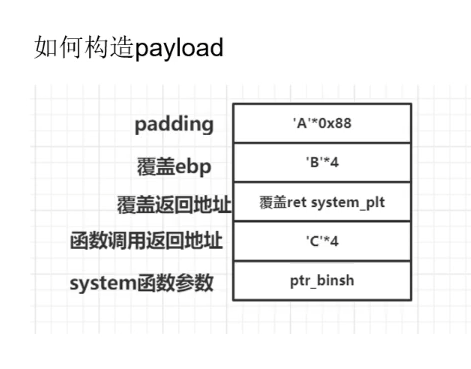

课程来源 https://www.bilibili.com/video/BV1Uv411j7fr/?spm_id_from=333.788.recommend_more_video.-1
pwn环境
环境搭建
IDA7.0(静调)
python3 pwntools
- 自带checksec工具,查看保护
checksec 文件名 - 自带ROPgarget
- 自带checksec工具,查看保护
gdb, pwndbg(动调), peda
one_garget
one_garget /lic.so.6Libcsearcher(python3的不太可靠不保证有效,可以用libc.blukat.me网站暂时代替)
git clone https://github.com/lieanu/libcSearcher.gitcd LibcSearcherpython setup.py develop使用
1
2
3
4
5
6
7
8
9from LibcSearcher import *
# 第二个参数,为已泄露的实际地址,或最后12位(比如d90),int类型
obj = LibcSearcher("fgets",0x7ff39014bd90)
obj.dump("system") # system偏移
obj.dump("str_bin_sh") # /bin/sh偏移
obj.dump("_libc_start_main_ret")
main_arena_offset(堆题常用,泄露libc main arena的偏移地址)
git clone https://github.com/IZAY01/py_main_arena_offsetcd py_main_arena_offsetsudo python3 setup.py develop用法
1
2
3
4
5from pymao import *
libc = "./libc-2.27.so"
main_arena_offset = gmao(libc)
# or mian_arena_offset = get_main_arena_offset(libc)
使用技巧
pwntools
本地交互
1
2
3
4
5
6
7
8# 正常调用
p = process('./elf')
# 指定libc调用,
p = process('./elf', env={'LD_PRELOAD':'./libc.so.6'})
# 一般只是用第一种交互方式(正常调用)
# 只要写了p = process最后一定要有p.interactive()获取程序基地址
1
2
3
4p = process('./elf')
proc_base = p.libs()[elf_path]
# 这个elf_path必须是绝对路径字符串
# proc_base = p.libs()[p.cwd + p.argv[0].strip('.')]获取libc加载基地址
1
libc_base = p.libs()[libc_path]
用gdb来attach
在对应位置加上1
2
3
4
5
6
7
8
9gdb.attach(p,cmd)
# 这个cmd相当于在attach进程之后再gdb里下的命令
# 如果要夺下几条命令可以加\n模拟回车
"""
eg:
cmd = "b main\n"
cmd += "set $a = 0x8048000\n"
"""
# 可以再gdb.attach后面加pause()让程序停下来,gdb断点构造
1
2
3
4def debug(cmd = ""):
cmd = "b *%d\n" %(proc_base + breakaddr)
gdb.attach(p,cmd)
pause()shell构造
- 在exp开头指定os和arch``
context(arch = 'amd64', os = 'linux', log_level = 'debug') - 然后’shellcraft.sh()’
- 生成可以push指定字符串的shellcode:
shellcraft.pushstr() - 生成可以直接读取指定文件的shellcode:
shellcraft.cat(),自己写的话一般要open()->read()->write()
- 在exp开头指定os和arch``
pwndbg
- 查看内存
x/(numbs)(type) $ax/32gx $ax/24wx $a
vmmap显示的第一项的地址是程序的基址,用IDA可以得到具体代码段的偏移,可以在指定位置下断点b *(基址+偏移)- 基本指令
c:continues:单步跟入stack 30:查看栈上内容libc查看libc基地址telescope &system查看system plt地址和具体信息
pwngdb
fmtarg + 地址算格式化字符串偏移
ROPgadget
查找可存储寄存器的代码
1
ROPgadget --binary 文件名 --only 'pop|ret' | grep 'eax'
查找字符串
1
ROPgadget --binary 文件名 --string "/bin/sh"
查找有int 0x80的地址
1
ROPgadget --binary 文件名 --only 'int'
systemcall
arm
| NR | SYSCALL NAME | references | r7 | ARG0 (r0) | ARG1 (r1) | ARG2 (r2) | ARG3 (r3) | ARG4 (r4) | ARG5 (r5) |
|---|---|---|---|---|---|---|---|---|---|
| 0 | restart_syscall | man/ cs/ | 0 | - | - | - | - | - | - |
| 1 | exit | man/ cs/ | 1 | int error_code | - | - | - | - | - |
| 2 | fork | man/ cs/ | 2 | - | - | - | - | - | - |
| 3 | read | man/ cs/ | 3 | unsigned int fd | char *buf | size_t count | - | - | - |
| 4 | write | man/ cs/ | 4 | unsigned int fd | const char *buf | size_t count | - | - | - |
| 5 | open | man/ cs/ | 5 | const char *filename | int flags | umode_t mode | - | - | - |
| 6 | close | man/ cs/ | 6 | unsigned int fd | - | - | - | - | - |
| 7 | not implemented | 7 | |||||||
| 8 | creat | man/ cs/ | 8 | const char *pathname | umode_t mode | - | - | - | - |
| 9 | link | man/ cs/ | 9 | const char *oldname | const char *newname | - | - | - | - |
| 10 | unlink | man/ cs/ | A | const char *pathname | - | - | - | - | - |
| 11 | execve | man/ cs/ | B | const char *filename | const char *const *argv | const char *const *envp | - | - | - |
| 12 | chdir | man/ cs/ | C | const char *filename | - | - | - | - | - |
| 13 | not implemented | D | |||||||
| 14 | mknod | man/ cs/ | E | const char *filename | umode_t mode | unsigned dev | - | - | - |
| 15 | chmod | man/ cs/ | F | const char *filename | umode_t mode | - | - | - | - |
| 16 | lchown | man/ cs/ | 10 | const char *filename | uid_t user | gid_t group | - | - | - |
| 17 | not implemented | 11 | |||||||
| 18 | not implemented | 12 | |||||||
| 19 | lseek | man/ cs/ | 13 | unsigned int fd | off_t offset | unsigned int whence | - | - | - |
| 20 | getpid | man/ cs/ | 14 | - | - | - | - | - | - |
| 21 | mount | man/ cs/ | 15 | char *dev_name | char *dir_name | char *type | unsigned long flags | void *data | - |
| 22 | not implemented | 16 | |||||||
| 23 | setuid | man/ cs/ | 17 | uid_t uid | - | - | - | - | - |
| 24 | getuid | man/ cs/ | 18 | - | - | - | - | - | - |
| 25 | not implemented | 19 | |||||||
| 26 | ptrace | man/ cs/ | 1A | long request | long pid | unsigned long addr | unsigned long data | - | - |
| 27 | not implemented | 1B | |||||||
| 28 | not implemented | 1C | |||||||
| 29 | pause | man/ cs/ | 1D | - | - | - | - | - | - |
| 30 | not implemented | 1E | |||||||
| 31 | not implemented | 1F | |||||||
| 32 | not implemented | 20 | |||||||
| 33 | access | man/ cs/ | 21 | const char *filename | int mode | - | - | - | - |
| 34 | nice | man/ cs/ | 22 | int increment | - | - | - | - | - |
| 35 | not implemented | 23 | |||||||
| 36 | sync | man/ cs/ | 24 | - | - | - | - | - | - |
| 37 | kill | man/ cs/ | 25 | pid_t pid | int sig | - | - | - | - |
| 38 | rename | man/ cs/ | 26 | const char *oldname | const char *newname | - | - | - | - |
| 39 | mkdir | man/ cs/ | 27 | const char *pathname | umode_t mode | - | - | - | - |
| 40 | rmdir | man/ cs/ | 28 | const char *pathname | - | - | - | - | - |
| 41 | dup | man/ cs/ | 29 | unsigned int fildes | - | - | - | - | - |
| 42 | pipe | man/ cs/ | 2A | int *fildes | - | - | - | - | - |
| 43 | times | man/ cs/ | 2B | struct tms *tbuf | - | - | - | - | - |
| 44 | not implemented | 2C | |||||||
| 45 | brk | man/ cs/ | 2D | unsigned long brk | - | - | - | - | - |
| 46 | setgid | man/ cs/ | 2E | gid_t gid | - | - | - | - | - |
| 47 | getgid | man/ cs/ | 2F | - | - | - | - | - | - |
| 48 | not implemented | 30 | |||||||
| 49 | geteuid | man/ cs/ | 31 | - | - | - | - | - | - |
| 50 | getegid | man/ cs/ | 32 | - | - | - | - | - | - |
| 51 | acct | man/ cs/ | 33 | const char *name | - | - | - | - | - |
| 52 | umount2 | man/ cs/ | 34 | ? | ? | ? | ? | ? | ? |
| 53 | not implemented | 35 | |||||||
| 54 | ioctl | man/ cs/ | 36 | unsigned int fd | unsigned int cmd | unsigned long arg | - | - | - |
| 55 | fcntl | man/ cs/ | 37 | unsigned int fd | unsigned int cmd | unsigned long arg | - | - | - |
| 56 | not implemented | 38 | |||||||
| 57 | setpgid | man/ cs/ | 39 | pid_t pid | pid_t pgid | - | - | - | - |
| 58 | not implemented | 3A | |||||||
| 59 | not implemented | 3B | |||||||
| 60 | umask | man/ cs/ | 3C | int mask | - | - | - | - | - |
| 61 | chroot | man/ cs/ | 3D | const char *filename | - | - | - | - | - |
| 62 | ustat | man/ cs/ | 3E | unsigned dev | struct ustat *ubuf | - | - | - | - |
| 63 | dup2 | man/ cs/ | 3F | unsigned int oldfd | unsigned int newfd | - | - | - | - |
| 64 | getppid | man/ cs/ | 40 | - | - | - | - | - | - |
| 65 | getpgrp | man/ cs/ | 41 | - | - | - | - | - | - |
| 66 | setsid | man/ cs/ | 42 | - | - | - | - | - | - |
| 67 | sigaction | man/ cs/ | 43 | int | const struct old_sigaction * | struct old_sigaction * | - | - | - |
| 68 | not implemented | 44 | |||||||
| 69 | not implemented | 45 | |||||||
| 70 | setreuid | man/ cs/ | 46 | uid_t ruid | uid_t euid | - | - | - | - |
| 71 | setregid | man/ cs/ | 47 | gid_t rgid | gid_t egid | - | - | - | - |
| 72 | sigsuspend | man/ cs/ | 48 | int unused1 | int unused2 | old_sigset_t mask | - | - | - |
| 73 | sigpending | man/ cs/ | 49 | old_sigset_t *uset | - | - | - | - | - |
| 74 | sethostname | man/ cs/ | 4A | char *name | int len | - | - | - | - |
| 75 | setrlimit | man/ cs/ | 4B | unsigned int resource | struct rlimit *rlim | - | - | - | - |
| 76 | not implemented | 4C | |||||||
| 77 | getrusage | man/ cs/ | 4D | int who | struct rusage *ru | - | - | - | - |
| 78 | gettimeofday | man/ cs/ | 4E | struct timeval *tv | struct timezone *tz | - | - | - | - |
| 79 | settimeofday | man/ cs/ | 4F | struct timeval *tv | struct timezone *tz | - | - | - | - |
| 80 | getgroups | man/ cs/ | 50 | int gidsetsize | gid_t *grouplist | - | - | - | - |
| 81 | setgroups | man/ cs/ | 51 | int gidsetsize | gid_t *grouplist | - | - | - | - |
| 82 | not implemented | 52 | |||||||
| 83 | symlink | man/ cs/ | 53 | const char *old | const char *new | - | - | - | - |
| 84 | not implemented | 54 | |||||||
| 85 | readlink | man/ cs/ | 55 | const char *path | char *buf | int bufsiz | - | - | - |
| 86 | uselib | man/ cs/ | 56 | const char *library | - | - | - | - | - |
| 87 | swapon | man/ cs/ | 57 | const char *specialfile | int swap_flags | - | - | - | - |
| 88 | reboot | man/ cs/ | 58 | int magic1 | int magic2 | unsigned int cmd | void *arg | - | - |
| 89 | not implemented | 59 | |||||||
| 90 | not implemented | 5A | |||||||
| 91 | munmap | man/ cs/ | 5B | unsigned long addr | size_t len | - | - | - | - |
| 92 | truncate | man/ cs/ | 5C | const char *path | long length | - | - | - | - |
| 93 | ftruncate | man/ cs/ | 5D | unsigned int fd | unsigned long length | - | - | - | - |
| 94 | fchmod | man/ cs/ | 5E | unsigned int fd | umode_t mode | - | - | - | - |
| 95 | fchown | man/ cs/ | 5F | unsigned int fd | uid_t user | gid_t group | - | - | - |
| 96 | getpriority | man/ cs/ | 60 | int which | int who | - | - | - | - |
| 97 | setpriority | man/ cs/ | 61 | int which | int who | int niceval | - | - | - |
| 98 | not implemented | 62 | |||||||
| 99 | statfs | man/ cs/ | 63 | const char * path | struct statfs *buf | - | - | - | - |
| 100 | fstatfs | man/ cs/ | 64 | unsigned int fd | struct statfs *buf | - | - | - | - |
| 101 | not implemented | 65 | |||||||
| 102 | not implemented | 66 | |||||||
| 103 | syslog | man/ cs/ | 67 | int type | char *buf | int len | - | - | - |
| 104 | setitimer | man/ cs/ | 68 | int which | struct itimerval *value | struct itimerval *ovalue | - | - | - |
| 105 | getitimer | man/ cs/ | 69 | int which | struct itimerval *value | - | - | - | - |
| 106 | stat | man/ cs/ | 6A | const char *filename | struct __old_kernel_stat *statbuf | - | - | - | - |
| 107 | lstat | man/ cs/ | 6B | const char *filename | struct __old_kernel_stat *statbuf | - | - | - | - |
| 108 | fstat | man/ cs/ | 6C | unsigned int fd | struct __old_kernel_stat *statbuf | - | - | - | - |
| 109 | not implemented | 6D | |||||||
| 110 | not implemented | 6E | |||||||
| 111 | vhangup | man/ cs/ | 6F | - | - | - | - | - | - |
| 112 | not implemented | 70 | |||||||
| 113 | not implemented | 71 | |||||||
| 114 | wait4 | man/ cs/ | 72 | pid_t pid | int *stat_addr | int options | struct rusage *ru | - | - |
| 115 | swapoff | man/ cs/ | 73 | const char *specialfile | - | - | - | - | - |
| 116 | sysinfo | man/ cs/ | 74 | struct sysinfo *info | - | - | - | - | - |
| 117 | not implemented | 75 | |||||||
| 118 | fsync | man/ cs/ | 76 | unsigned int fd | - | - | - | - | - |
| 119 | sigreturn | man/ cs/ | 77 | ? | ? | ? | ? | ? | ? |
| 120 | clone | man/ cs/ | 78 | unsigned long | unsigned long | int * | int * | unsigned long | - |
| 121 | setdomainname | man/ cs/ | 79 | char *name | int len | - | - | - | - |
| 122 | uname | man/ cs/ | 7A | struct old_utsname * | - | - | - | - | - |
| 123 | not implemented | 7B | |||||||
| 124 | adjtimex | man/ cs/ | 7C | struct __kernel_timex *txc_p | - | - | - | - | - |
| 125 | mprotect | man/ cs/ | 7D | unsigned long start | size_t len | unsigned long prot | - | - | - |
| 126 | sigprocmask | man/ cs/ | 7E | int how | old_sigset_t *set | old_sigset_t *oset | - | - | - |
| 127 | not implemented | 7F | |||||||
| 128 | init_module | man/ cs/ | 80 | void *umod | unsigned long len | const char *uargs | - | - | - |
| 129 | delete_module | man/ cs/ | 81 | const char *name_user | unsigned int flags | - | - | - | - |
| 130 | not implemented | 82 | |||||||
| 131 | quotactl | man/ cs/ | 83 | unsigned int cmd | const char *special | qid_t id | void *addr | - | - |
| 132 | getpgid | man/ cs/ | 84 | pid_t pid | - | - | - | - | - |
| 133 | fchdir | man/ cs/ | 85 | unsigned int fd | - | - | - | - | - |
| 134 | bdflush | man/ cs/ | 86 | int func | long data | - | - | - | - |
| 135 | sysfs | man/ cs/ | 87 | int option | unsigned long arg1 | unsigned long arg2 | - | - | - |
| 136 | personality | man/ cs/ | 88 | unsigned int personality | - | - | - | - | - |
| 137 | not implemented | 89 | |||||||
| 138 | setfsuid | man/ cs/ | 8A | uid_t uid | - | - | - | - | - |
| 139 | setfsgid | man/ cs/ | 8B | gid_t gid | - | - | - | - | - |
| 140 | _llseek | man/ cs/ | 8C | ? | ? | ? | ? | ? | ? |
| 141 | getdents | man/ cs/ | 8D | unsigned int fd | struct linux_dirent *dirent | unsigned int count | - | - | - |
| 142 | _newselect | man/ cs/ | 8E | ? | ? | ? | ? | ? | ? |
| 143 | flock | man/ cs/ | 8F | unsigned int fd | unsigned int cmd | - | - | - | - |
| 144 | msync | man/ cs/ | 90 | unsigned long start | size_t len | int flags | - | - | - |
| 145 | readv | man/ cs/ | 91 | unsigned long fd | const struct iovec *vec | unsigned long vlen | - | - | - |
| 146 | writev | man/ cs/ | 92 | unsigned long fd | const struct iovec *vec | unsigned long vlen | - | - | - |
| 147 | getsid | man/ cs/ | 93 | pid_t pid | - | - | - | - | - |
| 148 | fdatasync | man/ cs/ | 94 | unsigned int fd | - | - | - | - | - |
| 149 | _sysctl | man/ cs/ | 95 | ? | ? | ? | ? | ? | ? |
| 150 | mlock | man/ cs/ | 96 | unsigned long start | size_t len | - | - | - | - |
| 151 | munlock | man/ cs/ | 97 | unsigned long start | size_t len | - | - | - | - |
| 152 | mlockall | man/ cs/ | 98 | int flags | - | - | - | - | - |
| 153 | munlockall | man/ cs/ | 99 | - | - | - | - | - | - |
| 154 | sched_setparam | man/ cs/ | 9A | pid_t pid | struct sched_param *param | - | - | - | - |
| 155 | sched_getparam | man/ cs/ | 9B | pid_t pid | struct sched_param *param | - | - | - | - |
| 156 | sched_setscheduler | man/ cs/ | 9C | pid_t pid | int policy | struct sched_param *param | - | - | - |
| 157 | sched_getscheduler | man/ cs/ | 9D | pid_t pid | - | - | - | - | - |
| 158 | sched_yield | man/ cs/ | 9E | - | - | - | - | - | - |
| 159 | sched_get_priority_max | man/ cs/ | 9F | int policy | - | - | - | - | - |
| 160 | sched_get_priority_min | man/ cs/ | A0 | int policy | - | - | - | - | - |
| 161 | sched_rr_get_interval | man/ cs/ | A1 | pid_t pid | struct __kernel_timespec *interval | - | - | - | - |
| 162 | nanosleep | man/ cs/ | A2 | struct __kernel_timespec *rqtp | struct __kernel_timespec *rmtp | - | - | - | - |
| 163 | mremap | man/ cs/ | A3 | unsigned long addr | unsigned long old_len | unsigned long new_len | unsigned long flags | unsigned long new_addr | - |
| 164 | setresuid | man/ cs/ | A4 | uid_t ruid | uid_t euid | uid_t suid | - | - | - |
| 165 | getresuid | man/ cs/ | A5 | uid_t *ruid | uid_t *euid | uid_t *suid | - | - | - |
| 166 | not implemented | A6 | |||||||
| 167 | not implemented | A7 | |||||||
| 168 | poll | man/ cs/ | A8 | struct pollfd *ufds | unsigned int nfds | int timeout | - | - | - |
| 169 | nfsservctl | man/ cs/ | A9 | ? | ? | ? | ? | ? | ? |
| 170 | setresgid | man/ cs/ | AA | gid_t rgid | gid_t egid | gid_t sgid | - | - | - |
| 171 | getresgid | man/ cs/ | AB | gid_t *rgid | gid_t *egid | gid_t *sgid | - | - | - |
| 172 | prctl | man/ cs/ | AC | int option | unsigned long arg2 | unsigned long arg3 | unsigned long arg4 | unsigned long arg5 | - |
| 173 | rt_sigreturn | man/ cs/ | AD | ? | ? | ? | ? | ? | ? |
| 174 | rt_sigaction | man/ cs/ | AE | int | const struct sigaction * | struct sigaction * | size_t | - | - |
| 175 | rt_sigprocmask | man/ cs/ | AF | int how | sigset_t *set | sigset_t *oset | size_t sigsetsize | - | - |
| 176 | rt_sigpending | man/ cs/ | B0 | sigset_t *set | size_t sigsetsize | - | - | - | - |
| 177 | rt_sigtimedwait | man/ cs/ | B1 | const sigset_t *uthese | siginfo_t *uinfo | const struct __kernel_timespec *uts | size_t sigsetsize | - | - |
| 178 | rt_sigqueueinfo | man/ cs/ | B2 | pid_t pid | int sig | siginfo_t *uinfo | - | - | - |
| 179 | rt_sigsuspend | man/ cs/ | B3 | sigset_t *unewset | size_t sigsetsize | - | - | - | - |
| 180 | pread64 | man/ cs/ | B4 | unsigned int fd | char *buf | size_t count | loff_t pos | - | - |
| 181 | pwrite64 | man/ cs/ | B5 | unsigned int fd | const char *buf | size_t count | loff_t pos | - | - |
| 182 | chown | man/ cs/ | B6 | const char *filename | uid_t user | gid_t group | - | - | - |
| 183 | getcwd | man/ cs/ | B7 | char *buf | unsigned long size | - | - | - | - |
| 184 | capget | man/ cs/ | B8 | cap_user_header_t header | cap_user_data_t dataptr | - | - | - | - |
| 185 | capset | man/ cs/ | B9 | cap_user_header_t header | const cap_user_data_t data | - | - | - | - |
| 186 | sigaltstack | man/ cs/ | BA | const struct sigaltstack *uss | struct sigaltstack *uoss | - | - | - | - |
| 187 | sendfile | man/ cs/ | BB | int out_fd | int in_fd | off_t *offset | size_t count | - | - |
| 188 | not implemented | BC | |||||||
| 189 | not implemented | BD | |||||||
| 190 | vfork | man/ cs/ | BE | - | - | - | - | - | - |
| 191 | ugetrlimit | man/ cs/ | BF | ? | ? | ? | ? | ? | ? |
| 192 | mmap2 | man/ cs/ | C0 | ? | ? | ? | ? | ? | ? |
| 193 | truncate64 | man/ cs/ | C1 | const char *path | loff_t length | - | - | - | - |
| 194 | ftruncate64 | man/ cs/ | C2 | unsigned int fd | loff_t length | - | - | - | - |
| 195 | stat64 | man/ cs/ | C3 | const char *filename | struct stat64 *statbuf | - | - | - | - |
| 196 | lstat64 | man/ cs/ | C4 | const char *filename | struct stat64 *statbuf | - | - | - | - |
| 197 | fstat64 | man/ cs/ | C5 | unsigned long fd | struct stat64 *statbuf | - | - | - | - |
| 198 | lchown32 | man/ cs/ | C6 | ? | ? | ? | ? | ? | ? |
| 199 | getuid32 | man/ cs/ | C7 | ? | ? | ? | ? | ? | ? |
| 200 | getgid32 | man/ cs/ | C8 | ? | ? | ? | ? | ? | ? |
| 201 | geteuid32 | man/ cs/ | C9 | ? | ? | ? | ? | ? | ? |
| 202 | getegid32 | man/ cs/ | CA | ? | ? | ? | ? | ? | ? |
| 203 | setreuid32 | man/ cs/ | CB | ? | ? | ? | ? | ? | ? |
| 204 | setregid32 | man/ cs/ | CC | ? | ? | ? | ? | ? | ? |
| 205 | getgroups32 | man/ cs/ | CD | ? | ? | ? | ? | ? | ? |
| 206 | setgroups32 | man/ cs/ | CE | ? | ? | ? | ? | ? | ? |
| 207 | fchown32 | man/ cs/ | CF | ? | ? | ? | ? | ? | ? |
| 208 | setresuid32 | man/ cs/ | D0 | ? | ? | ? | ? | ? | ? |
| 209 | getresuid32 | man/ cs/ | D1 | ? | ? | ? | ? | ? | ? |
| 210 | setresgid32 | man/ cs/ | D2 | ? | ? | ? | ? | ? | ? |
| 211 | getresgid32 | man/ cs/ | D3 | ? | ? | ? | ? | ? | ? |
| 212 | chown32 | man/ cs/ | D4 | ? | ? | ? | ? | ? | ? |
| 213 | setuid32 | man/ cs/ | D5 | ? | ? | ? | ? | ? | ? |
| 214 | setgid32 | man/ cs/ | D6 | ? | ? | ? | ? | ? | ? |
| 215 | setfsuid32 | man/ cs/ | D7 | ? | ? | ? | ? | ? | ? |
| 216 | setfsgid32 | man/ cs/ | D8 | ? | ? | ? | ? | ? | ? |
| 217 | getdents64 | man/ cs/ | D9 | unsigned int fd | struct linux_dirent64 *dirent | unsigned int count | - | - | - |
| 218 | pivot_root | man/ cs/ | DA | const char *new_root | const char *put_old | - | - | - | - |
| 219 | mincore | man/ cs/ | DB | unsigned long start | size_t len | unsigned char * vec | - | - | - |
| 220 | madvise | man/ cs/ | DC | unsigned long start | size_t len | int behavior | - | - | - |
| 221 | fcntl64 | man/ cs/ | DD | unsigned int fd | unsigned int cmd | unsigned long arg | - | - | - |
| 222 | not implemented | DE | |||||||
| 223 | not implemented | DF | |||||||
| 224 | gettid | man/ cs/ | E0 | - | - | - | - | - | - |
| 225 | readahead | man/ cs/ | E1 | int fd | loff_t offset | size_t count | - | - | - |
| 226 | setxattr | man/ cs/ | E2 | const char *path | const char *name | const void *value | size_t size | int flags | - |
| 227 | lsetxattr | man/ cs/ | E3 | const char *path | const char *name | const void *value | size_t size | int flags | - |
| 228 | fsetxattr | man/ cs/ | E4 | int fd | const char *name | const void *value | size_t size | int flags | - |
| 229 | getxattr | man/ cs/ | E5 | const char *path | const char *name | void *value | size_t size | - | - |
| 230 | lgetxattr | man/ cs/ | E6 | const char *path | const char *name | void *value | size_t size | - | - |
| 231 | fgetxattr | man/ cs/ | E7 | int fd | const char *name | void *value | size_t size | - | - |
| 232 | listxattr | man/ cs/ | E8 | const char *path | char *list | size_t size | - | - | - |
| 233 | llistxattr | man/ cs/ | E9 | const char *path | char *list | size_t size | - | - | - |
| 234 | flistxattr | man/ cs/ | EA | int fd | char *list | size_t size | - | - | - |
| 235 | removexattr | man/ cs/ | EB | const char *path | const char *name | - | - | - | - |
| 236 | lremovexattr | man/ cs/ | EC | const char *path | const char *name | - | - | - | - |
| 237 | fremovexattr | man/ cs/ | ED | int fd | const char *name | - | - | - | - |
| 238 | tkill | man/ cs/ | EE | pid_t pid | int sig | - | - | - | - |
| 239 | sendfile64 | man/ cs/ | EF | int out_fd | int in_fd | loff_t *offset | size_t count | - | - |
| 240 | futex | man/ cs/ | F0 | u32 *uaddr | int op | u32 val | struct __kernel_timespec *utime | u32 *uaddr2 | u32 val3 |
| 241 | sched_setaffinity | man/ cs/ | F1 | pid_t pid | unsigned int len | unsigned long *user_mask_ptr | - | - | - |
| 242 | sched_getaffinity | man/ cs/ | F2 | pid_t pid | unsigned int len | unsigned long *user_mask_ptr | - | - | - |
| 243 | io_setup | man/ cs/ | F3 | unsigned nr_reqs | aio_context_t *ctx | - | - | - | - |
| 244 | io_destroy | man/ cs/ | F4 | aio_context_t ctx | - | - | - | - | - |
| 245 | io_getevents | man/ cs/ | F5 | aio_context_t ctx_id | long min_nr | long nr | struct io_event *events | struct __kernel_timespec *timeout | - |
| 246 | io_submit | man/ cs/ | F6 | aio_context_t | long | struct iocb * * | - | - | - |
| 247 | io_cancel | man/ cs/ | F7 | aio_context_t ctx_id | struct iocb *iocb | struct io_event *result | - | - | - |
| 248 | exit_group | man/ cs/ | F8 | int error_code | - | - | - | - | - |
| 249 | lookup_dcookie | man/ cs/ | F9 | u64 cookie64 | char *buf | size_t len | - | - | - |
| 250 | epoll_create | man/ cs/ | FA | int size | - | - | - | - | - |
| 251 | epoll_ctl | man/ cs/ | FB | int epfd | int op | int fd | struct epoll_event *event | - | - |
| 252 | epoll_wait | man/ cs/ | FC | int epfd | struct epoll_event *events | int maxevents | int timeout | - | - |
| 253 | remap_file_pages | man/ cs/ | FD | unsigned long start | unsigned long size | unsigned long prot | unsigned long pgoff | unsigned long flags | - |
| 254 | not implemented | FE | |||||||
| 255 | not implemented | FF | |||||||
| 256 | set_tid_address | man/ cs/ | 100 | int *tidptr | - | - | - | - | - |
| 257 | timer_create | man/ cs/ | 101 | clockid_t which_clock | struct sigevent *timer_event_spec | timer_t * created_timer_id | - | - | - |
| 258 | timer_settime | man/ cs/ | 102 | timer_t timer_id | int flags | const struct __kernel_itimerspec *new_setting | struct __kernel_itimerspec *old_setting | - | - |
| 259 | timer_gettime | man/ cs/ | 103 | timer_t timer_id | struct __kernel_itimerspec *setting | - | - | - | - |
| 260 | timer_getoverrun | man/ cs/ | 104 | timer_t timer_id | - | - | - | - | - |
| 261 | timer_delete | man/ cs/ | 105 | timer_t timer_id | - | - | - | - | - |
| 262 | clock_settime | man/ cs/ | 106 | clockid_t which_clock | const struct __kernel_timespec *tp | - | - | - | - |
| 263 | clock_gettime | man/ cs/ | 107 | clockid_t which_clock | struct __kernel_timespec *tp | - | - | - | - |
| 264 | clock_getres | man/ cs/ | 108 | clockid_t which_clock | struct __kernel_timespec *tp | - | - | - | - |
| 265 | clock_nanosleep | man/ cs/ | 109 | clockid_t which_clock | int flags | const struct __kernel_timespec *rqtp | struct __kernel_timespec *rmtp | - | - |
| 266 | statfs64 | man/ cs/ | 10A | const char *path | size_t sz | struct statfs64 *buf | - | - | - |
| 267 | fstatfs64 | man/ cs/ | 10B | unsigned int fd | size_t sz | struct statfs64 *buf | - | - | - |
| 268 | tgkill | man/ cs/ | 10C | pid_t tgid | pid_t pid | int sig | - | - | - |
| 269 | utimes | man/ cs/ | 10D | char *filename | struct timeval *utimes | - | - | - | - |
| 270 | arm_fadvise64_64 | man/ cs/ | 10E | ? | ? | ? | ? | ? | ? |
| 271 | pciconfig_iobase | man/ cs/ | 10F | long which | unsigned long bus | unsigned long devfn | - | - | - |
| 272 | pciconfig_read | man/ cs/ | 110 | unsigned long bus | unsigned long dfn | unsigned long off | unsigned long len | void *buf | - |
| 273 | pciconfig_write | man/ cs/ | 111 | unsigned long bus | unsigned long dfn | unsigned long off | unsigned long len | void *buf | - |
| 274 | mq_open | man/ cs/ | 112 | const char *name | int oflag | umode_t mode | struct mq_attr *attr | - | - |
| 275 | mq_unlink | man/ cs/ | 113 | const char *name | - | - | - | - | - |
| 276 | mq_timedsend | man/ cs/ | 114 | mqd_t mqdes | const char *msg_ptr | size_t msg_len | unsigned int msg_prio | const struct __kernel_timespec *abs_timeout | - |
| 277 | mq_timedreceive | man/ cs/ | 115 | mqd_t mqdes | char *msg_ptr | size_t msg_len | unsigned int *msg_prio | const struct __kernel_timespec *abs_timeout | - |
| 278 | mq_notify | man/ cs/ | 116 | mqd_t mqdes | const struct sigevent *notification | - | - | - | - |
| 279 | mq_getsetattr | man/ cs/ | 117 | mqd_t mqdes | const struct mq_attr *mqstat | struct mq_attr *omqstat | - | - | - |
| 280 | waitid | man/ cs/ | 118 | int which | pid_t pid | struct siginfo *infop | int options | struct rusage *ru | - |
| 281 | socket | man/ cs/ | 119 | int | int | int | - | - | - |
| 282 | bind | man/ cs/ | 11A | int | struct sockaddr * | int | - | - | - |
| 283 | connect | man/ cs/ | 11B | int | struct sockaddr * | int | - | - | - |
| 284 | listen | man/ cs/ | 11C | int | int | - | - | - | - |
| 285 | accept | man/ cs/ | 11D | int | struct sockaddr * | int * | - | - | - |
| 286 | getsockname | man/ cs/ | 11E | int | struct sockaddr * | int * | - | - | - |
| 287 | getpeername | man/ cs/ | 11F | int | struct sockaddr * | int * | - | - | - |
| 288 | socketpair | man/ cs/ | 120 | int | int | int | int * | - | - |
| 289 | send | man/ cs/ | 121 | int | void * | size_t | unsigned | - | - |
| 290 | sendto | man/ cs/ | 122 | int | void * | size_t | unsigned | struct sockaddr * | int |
| 291 | recv | man/ cs/ | 123 | int | void * | size_t | unsigned | - | - |
| 292 | recvfrom | man/ cs/ | 124 | int | void * | size_t | unsigned | struct sockaddr * | int * |
| 293 | shutdown | man/ cs/ | 125 | int | int | - | - | - | - |
| 294 | setsockopt | man/ cs/ | 126 | int fd | int level | int optname | char *optval | int optlen | - |
| 295 | getsockopt | man/ cs/ | 127 | int fd | int level | int optname | char *optval | int *optlen | - |
| 296 | sendmsg | man/ cs/ | 128 | int fd | struct user_msghdr *msg | unsigned flags | - | - | - |
| 297 | recvmsg | man/ cs/ | 129 | int fd | struct user_msghdr *msg | unsigned flags | - | - | - |
| 298 | semop | man/ cs/ | 12A | int semid | struct sembuf *sops | unsigned nsops | - | - | - |
| 299 | semget | man/ cs/ | 12B | key_t key | int nsems | int semflg | - | - | - |
| 300 | semctl | man/ cs/ | 12C | int semid | int semnum | int cmd | unsigned long arg | - | - |
| 301 | msgsnd | man/ cs/ | 12D | int msqid | struct msgbuf *msgp | size_t msgsz | int msgflg | - | - |
| 302 | msgrcv | man/ cs/ | 12E | int msqid | struct msgbuf *msgp | size_t msgsz | long msgtyp | int msgflg | - |
| 303 | msgget | man/ cs/ | 12F | key_t key | int msgflg | - | - | - | - |
| 304 | msgctl | man/ cs/ | 130 | int msqid | int cmd | struct msqid_ds *buf | - | - | - |
| 305 | shmat | man/ cs/ | 131 | int shmid | char *shmaddr | int shmflg | - | - | - |
| 306 | shmdt | man/ cs/ | 132 | char *shmaddr | - | - | - | - | - |
| 307 | shmget | man/ cs/ | 133 | key_t key | size_t size | int flag | - | - | - |
| 308 | shmctl | man/ cs/ | 134 | int shmid | int cmd | struct shmid_ds *buf | - | - | - |
| 309 | add_key | man/ cs/ | 135 | const char *_type | const char *_description | const void *_payload | size_t plen | key_serial_t destringid | - |
| 310 | request_key | man/ cs/ | 136 | const char *_type | const char *_description | const char *_callout_info | key_serial_t destringid | - | - |
| 311 | keyctl | man/ cs/ | 137 | int cmd | unsigned long arg2 | unsigned long arg3 | unsigned long arg4 | unsigned long arg5 | - |
| 312 | semtimedop | man/ cs/ | 138 | int semid | struct sembuf *sops | unsigned nsops | const struct __kernel_timespec *timeout | - | - |
| 313 | vserver | man/ cs/ | 139 | ? | ? | ? | ? | ? | ? |
| 314 | ioprio_set | man/ cs/ | 13A | int which | int who | int ioprio | - | - | - |
| 315 | ioprio_get | man/ cs/ | 13B | int which | int who | - | - | - | - |
| 316 | inotify_init | man/ cs/ | 13C | - | - | - | - | - | - |
| 317 | inotify_add_watch | man/ cs/ | 13D | int fd | const char *path | u32 mask | - | - | - |
| 318 | inotify_rm_watch | man/ cs/ | 13E | int fd | __s32 wd | - | - | - | - |
| 319 | mbind | man/ cs/ | 13F | unsigned long start | unsigned long len | unsigned long mode | const unsigned long *nmask | unsigned long maxnode | unsigned flags |
| 320 | get_mempolicy | man/ cs/ | 140 | int *policy | unsigned long *nmask | unsigned long maxnode | unsigned long addr | unsigned long flags | - |
| 321 | set_mempolicy | man/ cs/ | 141 | int mode | const unsigned long *nmask | unsigned long maxnode | - | - | - |
| 322 | openat | man/ cs/ | 142 | int dfd | const char *filename | int flags | umode_t mode | - | - |
| 323 | mkdirat | man/ cs/ | 143 | int dfd | const char * pathname | umode_t mode | - | - | - |
| 324 | mknodat | man/ cs/ | 144 | int dfd | const char * filename | umode_t mode | unsigned dev | - | - |
| 325 | fchownat | man/ cs/ | 145 | int dfd | const char *filename | uid_t user | gid_t group | int flag | - |
| 326 | futimesat | man/ cs/ | 146 | int dfd | const char *filename | struct timeval *utimes | - | - | - |
| 327 | fstatat64 | man/ cs/ | 147 | int dfd | const char *filename | struct stat64 *statbuf | int flag | - | - |
| 328 | unlinkat | man/ cs/ | 148 | int dfd | const char * pathname | int flag | - | - | - |
| 329 | renameat | man/ cs/ | 149 | int olddfd | const char * oldname | int newdfd | const char * newname | - | - |
| 330 | linkat | man/ cs/ | 14A | int olddfd | const char *oldname | int newdfd | const char *newname | int flags | - |
| 331 | symlinkat | man/ cs/ | 14B | const char * oldname | int newdfd | const char * newname | - | - | - |
| 332 | readlinkat | man/ cs/ | 14C | int dfd | const char *path | char *buf | int bufsiz | - | - |
| 333 | fchmodat | man/ cs/ | 14D | int dfd | const char * filename | umode_t mode | - | - | - |
| 334 | faccessat | man/ cs/ | 14E | int dfd | const char *filename | int mode | - | - | - |
| 335 | pselect6 | man/ cs/ | 14F | int | fd_set * | fd_set * | fd_set * | struct __kernel_timespec * | void * |
| 336 | ppoll | man/ cs/ | 150 | struct pollfd * | unsigned int | struct __kernel_timespec * | const sigset_t * | size_t | - |
| 337 | unshare | man/ cs/ | 151 | unsigned long unshare_flags | - | - | - | - | - |
| 338 | set_robust_list | man/ cs/ | 152 | struct robust_list_head *head | size_t len | - | - | - | - |
| 339 | get_robust_list | man/ cs/ | 153 | int pid | struct robust_list_head * *head_ptr | size_t *len_ptr | - | - | - |
| 340 | splice | man/ cs/ | 154 | int fd_in | loff_t *off_in | int fd_out | loff_t *off_out | size_t len | unsigned int flags |
| 341 | arm_sync_file_range | man/ cs/ | 155 | ? | ? | ? | ? | ? | ? |
| 341 | sync_file_range2 | man/ cs/ | 155 | int fd | unsigned int flags | loff_t offset | loff_t nbytes | - | - |
| 342 | tee | man/ cs/ | 156 | int fdin | int fdout | size_t len | unsigned int flags | - | - |
| 343 | vmsplice | man/ cs/ | 157 | int fd | const struct iovec *iov | unsigned long nr_segs | unsigned int flags | - | - |
| 344 | move_pages | man/ cs/ | 158 | pid_t pid | unsigned long nr_pages | const void * *pages | const int *nodes | int *status | int flags |
| 345 | getcpu | man/ cs/ | 159 | unsigned *cpu | unsigned *node | struct getcpu_cache *cache | - | - | - |
| 346 | epoll_pwait | man/ cs/ | 15A | int epfd | struct epoll_event *events | int maxevents | int timeout | const sigset_t *sigmask | size_t sigsetsize |
| 347 | kexec_load | man/ cs/ | 15B | unsigned long entry | unsigned long nr_segments | struct kexec_segment *segments | unsigned long flags | - | - |
| 348 | utimensat | man/ cs/ | 15C | int dfd | const char *filename | struct __kernel_timespec *utimes | int flags | - | - |
| 349 | signalfd | man/ cs/ | 15D | int ufd | sigset_t *user_mask | size_t sizemask | - | - | - |
| 350 | timerfd_create | man/ cs/ | 15E | int clockid | int flags | - | - | - | - |
| 351 | eventfd | man/ cs/ | 15F | unsigned int count | - | - | - | - | - |
| 352 | fallocate | man/ cs/ | 160 | int fd | int mode | loff_t offset | loff_t len | - | - |
| 353 | timerfd_settime | man/ cs/ | 161 | int ufd | int flags | const struct __kernel_itimerspec *utmr | struct __kernel_itimerspec *otmr | - | - |
| 354 | timerfd_gettime | man/ cs/ | 162 | int ufd | struct __kernel_itimerspec *otmr | - | - | - | - |
| 355 | signalfd4 | man/ cs/ | 163 | int ufd | sigset_t *user_mask | size_t sizemask | int flags | - | - |
| 356 | eventfd2 | man/ cs/ | 164 | unsigned int count | int flags | - | - | - | - |
| 357 | epoll_create1 | man/ cs/ | 165 | int flags | - | - | - | - | - |
| 358 | dup3 | man/ cs/ | 166 | unsigned int oldfd | unsigned int newfd | int flags | - | - | - |
| 359 | pipe2 | man/ cs/ | 167 | int *fildes | int flags | - | - | - | - |
| 360 | inotify_init1 | man/ cs/ | 168 | int flags | - | - | - | - | - |
| 361 | preadv | man/ cs/ | 169 | unsigned long fd | const struct iovec *vec | unsigned long vlen | unsigned long pos_l | unsigned long pos_h | - |
| 362 | pwritev | man/ cs/ | 16A | unsigned long fd | const struct iovec *vec | unsigned long vlen | unsigned long pos_l | unsigned long pos_h | - |
| 363 | rt_tgsigqueueinfo | man/ cs/ | 16B | pid_t tgid | pid_t pid | int sig | siginfo_t *uinfo | - | - |
| 364 | perf_event_open | man/ cs/ | 16C | struct perf_event_attr *attr_uptr | pid_t pid | int cpu | int group_fd | unsigned long flags | - |
| 365 | recvmmsg | man/ cs/ | 16D | int fd | struct mmsghdr *msg | unsigned int vlen | unsigned flags | struct __kernel_timespec *timeout | - |
| 366 | accept4 | man/ cs/ | 16E | int | struct sockaddr * | int * | int | - | - |
| 367 | fanotify_init | man/ cs/ | 16F | unsigned int flags | unsigned int event_f_flags | - | - | - | - |
| 368 | fanotify_mark | man/ cs/ | 170 | int fanotify_fd | unsigned int flags | u64 mask | int fd | const char *pathname | - |
| 369 | prlimit64 | man/ cs/ | 171 | pid_t pid | unsigned int resource | const struct rlimit64 *new_rlim | struct rlimit64 *old_rlim | - | - |
| 370 | name_to_handle_at | man/ cs/ | 172 | int dfd | const char *name | struct file_handle *handle | int *mnt_id | int flag | - |
| 371 | open_by_handle_at | man/ cs/ | 173 | int mountdirfd | struct file_handle *handle | int flags | - | - | - |
| 372 | clock_adjtime | man/ cs/ | 174 | clockid_t which_clock | struct __kernel_timex *tx | - | - | - | - |
| 373 | syncfs | man/ cs/ | 175 | int fd | - | - | - | - | - |
| 374 | sendmmsg | man/ cs/ | 176 | int fd | struct mmsghdr *msg | unsigned int vlen | unsigned flags | - | - |
| 375 | setns | man/ cs/ | 177 | int fd | int nstype | - | - | - | - |
| 376 | process_vm_readv | man/ cs/ | 178 | pid_t pid | const struct iovec *lvec | unsigned long liovcnt | const struct iovec *rvec | unsigned long riovcnt | unsigned long flags |
| 377 | process_vm_writev | man/ cs/ | 179 | pid_t pid | const struct iovec *lvec | unsigned long liovcnt | const struct iovec *rvec | unsigned long riovcnt | unsigned long flags |
| 378 | kcmp | man/ cs/ | 17A | pid_t pid1 | pid_t pid2 | int type | unsigned long idx1 | unsigned long idx2 | - |
| 379 | finit_module | man/ cs/ | 17B | int fd | const char *uargs | int flags | - | - | - |
| 380 | sched_setattr | man/ cs/ | 17C | pid_t pid | struct sched_attr *attr | unsigned int flags | - | - | - |
| 381 | sched_getattr | man/ cs/ | 17D | pid_t pid | struct sched_attr *attr | unsigned int size | unsigned int flags | - | - |
| 382 | renameat2 | man/ cs/ | 17E | int olddfd | const char *oldname | int newdfd | const char *newname | unsigned int flags | - |
| 383 | seccomp | man/ cs/ | 17F | unsigned int op | unsigned int flags | void *uargs | - | - | - |
| 384 | getrandom | man/ cs/ | 180 | char *buf | size_t count | unsigned int flags | - | - | - |
| 385 | memfd_create | man/ cs/ | 181 | const char *uname_ptr | unsigned int flags | - | - | - | - |
| 386 | bpf | man/ cs/ | 182 | int cmd | union bpf_attr *attr | unsigned int size | - | - | - |
| 387 | execveat | man/ cs/ | 183 | int dfd | const char *filename | const char *const *argv | const char *const *envp | int flags | - |
| 388 | userfaultfd | man/ cs/ | 184 | int flags | - | - | - | - | - |
| 389 | membarrier | man/ cs/ | 185 | int cmd | int flags | - | - | - | - |
| 390 | mlock2 | man/ cs/ | 186 | unsigned long start | size_t len | int flags | - | - | - |
| 391 | copy_file_range | man/ cs/ | 187 | int fd_in | loff_t *off_in | int fd_out | loff_t *off_out | size_t len | unsigned int flags |
| 392 | preadv2 | man/ cs/ | 188 | unsigned long fd | const struct iovec *vec | unsigned long vlen | unsigned long pos_l | unsigned long pos_h | rwf_t flags |
| 393 | pwritev2 | man/ cs/ | 189 | unsigned long fd | const struct iovec *vec | unsigned long vlen | unsigned long pos_l | unsigned long pos_h | rwf_t flags |
| 394 | pkey_mprotect | man/ cs/ | 18A | unsigned long start | size_t len | unsigned long prot | int pkey | - | - |
| 395 | pkey_alloc | man/ cs/ | 18B | unsigned long flags | unsigned long init_val | - | - | - | - |
| 396 | pkey_free | man/ cs/ | 18C | int pkey | - | - | - | - | - |
| 397 | statx | man/ cs/ | 18D | int dfd | const char *path | unsigned flags | unsigned mask | struct statx *buffer | - |
| 983041 | ARM_breakpoint | man/ cs/ | F0001 | ? | ? | ? | ? | ? | ? |
| 983042 | ARM_cacheflush | man/ cs/ | F0002 | ? | ? | ? | ? | ? | ? |
| 983043 | ARM_usr26 | man/ cs/ | F0003 | ? | ? | ? | ? | ? | ? |
| 983044 | ARM_usr32 | man/ cs/ | F0004 | ? | ? | ? | ? | ? | ? |
| 983045 | ARM_set_tls | man/ cs/ | F0005 | ? | ? | ? | ? | ? | ? |
arm64
| NR | SYSCALL NAME | references | x8 | ARG0 (x0) | ARG1 (x1) | ARG2 (x2) | ARG3 (x3) | ARG4 (x4) | ARG5 (x5) |
|---|---|---|---|---|---|---|---|---|---|
| 0 | io_setup | man/ cs/ | 0 | unsigned nr_reqs | aio_context_t *ctx | - | - | - | - |
| 1 | io_destroy | man/ cs/ | 1 | aio_context_t ctx | - | - | - | - | - |
| 2 | io_submit | man/ cs/ | 2 | aio_context_t | long | struct iocb * * | - | - | - |
| 3 | io_cancel | man/ cs/ | 3 | aio_context_t ctx_id | struct iocb *iocb | struct io_event *result | - | - | - |
| 4 | io_getevents | man/ cs/ | 4 | aio_context_t ctx_id | long min_nr | long nr | struct io_event *events | struct __kernel_timespec *timeout | - |
| 5 | setxattr | man/ cs/ | 5 | const char *path | const char *name | const void *value | size_t size | int flags | - |
| 6 | lsetxattr | man/ cs/ | 6 | const char *path | const char *name | const void *value | size_t size | int flags | - |
| 7 | fsetxattr | man/ cs/ | 7 | int fd | const char *name | const void *value | size_t size | int flags | - |
| 8 | getxattr | man/ cs/ | 8 | const char *path | const char *name | void *value | size_t size | - | - |
| 9 | lgetxattr | man/ cs/ | 9 | const char *path | const char *name | void *value | size_t size | - | - |
| 10 | fgetxattr | man/ cs/ | A | int fd | const char *name | void *value | size_t size | - | - |
| 11 | listxattr | man/ cs/ | B | const char *path | char *list | size_t size | - | - | - |
| 12 | llistxattr | man/ cs/ | C | const char *path | char *list | size_t size | - | - | - |
| 13 | flistxattr | man/ cs/ | D | int fd | char *list | size_t size | - | - | - |
| 14 | removexattr | man/ cs/ | E | const char *path | const char *name | - | - | - | - |
| 15 | lremovexattr | man/ cs/ | F | const char *path | const char *name | - | - | - | - |
| 16 | fremovexattr | man/ cs/ | 10 | int fd | const char *name | - | - | - | - |
| 17 | getcwd | man/ cs/ | 11 | char *buf | unsigned long size | - | - | - | - |
| 18 | lookup_dcookie | man/ cs/ | 12 | u64 cookie64 | char *buf | size_t len | - | - | - |
| 19 | eventfd2 | man/ cs/ | 13 | unsigned int count | int flags | - | - | - | - |
| 20 | epoll_create1 | man/ cs/ | 14 | int flags | - | - | - | - | - |
| 21 | epoll_ctl | man/ cs/ | 15 | int epfd | int op | int fd | struct epoll_event *event | - | - |
| 22 | epoll_pwait | man/ cs/ | 16 | int epfd | struct epoll_event *events | int maxevents | int timeout | const sigset_t *sigmask | size_t sigsetsize |
| 23 | dup | man/ cs/ | 17 | unsigned int fildes | - | - | - | - | - |
| 24 | dup3 | man/ cs/ | 18 | unsigned int oldfd | unsigned int newfd | int flags | - | - | - |
| 25 | fcntl | man/ cs/ | 19 | unsigned int fd | unsigned int cmd | unsigned long arg | - | - | - |
| 26 | inotify_init1 | man/ cs/ | 1A | int flags | - | - | - | - | - |
| 27 | inotify_add_watch | man/ cs/ | 1B | int fd | const char *path | u32 mask | - | - | - |
| 28 | inotify_rm_watch | man/ cs/ | 1C | int fd | __s32 wd | - | - | - | - |
| 29 | ioctl | man/ cs/ | 1D | unsigned int fd | unsigned int cmd | unsigned long arg | - | - | - |
| 30 | ioprio_set | man/ cs/ | 1E | int which | int who | int ioprio | - | - | - |
| 31 | ioprio_get | man/ cs/ | 1F | int which | int who | - | - | - | - |
| 32 | flock | man/ cs/ | 20 | unsigned int fd | unsigned int cmd | - | - | - | - |
| 33 | mknodat | man/ cs/ | 21 | int dfd | const char * filename | umode_t mode | unsigned dev | - | - |
| 34 | mkdirat | man/ cs/ | 22 | int dfd | const char * pathname | umode_t mode | - | - | - |
| 35 | unlinkat | man/ cs/ | 23 | int dfd | const char * pathname | int flag | - | - | - |
| 36 | symlinkat | man/ cs/ | 24 | const char * oldname | int newdfd | const char * newname | - | - | - |
| 37 | linkat | man/ cs/ | 25 | int olddfd | const char *oldname | int newdfd | const char *newname | int flags | - |
| 38 | renameat | man/ cs/ | 26 | int olddfd | const char * oldname | int newdfd | const char * newname | - | - |
| 39 | umount2 | man/ cs/ | 27 | ? | ? | ? | ? | ? | ? |
| 40 | mount | man/ cs/ | 28 | char *dev_name | char *dir_name | char *type | unsigned long flags | void *data | - |
| 41 | pivot_root | man/ cs/ | 29 | const char *new_root | const char *put_old | - | - | - | - |
| 42 | nfsservctl | man/ cs/ | 2A | ? | ? | ? | ? | ? | ? |
| 43 | statfs | man/ cs/ | 2B | const char * path | struct statfs *buf | - | - | - | - |
| 44 | fstatfs | man/ cs/ | 2C | unsigned int fd | struct statfs *buf | - | - | - | - |
| 45 | truncate | man/ cs/ | 2D | const char *path | long length | - | - | - | - |
| 46 | ftruncate | man/ cs/ | 2E | unsigned int fd | unsigned long length | - | - | - | - |
| 47 | fallocate | man/ cs/ | 2F | int fd | int mode | loff_t offset | loff_t len | - | - |
| 48 | faccessat | man/ cs/ | 30 | int dfd | const char *filename | int mode | - | - | - |
| 49 | chdir | man/ cs/ | 31 | const char *filename | - | - | - | - | - |
| 50 | fchdir | man/ cs/ | 32 | unsigned int fd | - | - | - | - | - |
| 51 | chroot | man/ cs/ | 33 | const char *filename | - | - | - | - | - |
| 52 | fchmod | man/ cs/ | 34 | unsigned int fd | umode_t mode | - | - | - | - |
| 53 | fchmodat | man/ cs/ | 35 | int dfd | const char * filename | umode_t mode | - | - | - |
| 54 | fchownat | man/ cs/ | 36 | int dfd | const char *filename | uid_t user | gid_t group | int flag | - |
| 55 | fchown | man/ cs/ | 37 | unsigned int fd | uid_t user | gid_t group | - | - | - |
| 56 | openat | man/ cs/ | 38 | int dfd | const char *filename | int flags | umode_t mode | - | - |
| 57 | close | man/ cs/ | 39 | unsigned int fd | - | - | - | - | - |
| 58 | vhangup | man/ cs/ | 3A | - | - | - | - | - | - |
| 59 | pipe2 | man/ cs/ | 3B | int *fildes | int flags | - | - | - | - |
| 60 | quotactl | man/ cs/ | 3C | unsigned int cmd | const char *special | qid_t id | void *addr | - | - |
| 61 | getdents64 | man/ cs/ | 3D | unsigned int fd | struct linux_dirent64 *dirent | unsigned int count | - | - | - |
| 62 | lseek | man/ cs/ | 3E | unsigned int fd | off_t offset | unsigned int whence | - | - | - |
| 63 | read | man/ cs/ | 3F | unsigned int fd | char *buf | size_t count | - | - | - |
| 64 | write | man/ cs/ | 40 | unsigned int fd | const char *buf | size_t count | - | - | - |
| 65 | readv | man/ cs/ | 41 | unsigned long fd | const struct iovec *vec | unsigned long vlen | - | - | - |
| 66 | writev | man/ cs/ | 42 | unsigned long fd | const struct iovec *vec | unsigned long vlen | - | - | - |
| 67 | pread64 | man/ cs/ | 43 | unsigned int fd | char *buf | size_t count | loff_t pos | - | - |
| 68 | pwrite64 | man/ cs/ | 44 | unsigned int fd | const char *buf | size_t count | loff_t pos | - | - |
| 69 | preadv | man/ cs/ | 45 | unsigned long fd | const struct iovec *vec | unsigned long vlen | unsigned long pos_l | unsigned long pos_h | - |
| 70 | pwritev | man/ cs/ | 46 | unsigned long fd | const struct iovec *vec | unsigned long vlen | unsigned long pos_l | unsigned long pos_h | - |
| 71 | sendfile | man/ cs/ | 47 | int out_fd | int in_fd | off_t *offset | size_t count | - | - |
| 72 | pselect6 | man/ cs/ | 48 | int | fd_set * | fd_set * | fd_set * | struct __kernel_timespec * | void * |
| 73 | ppoll | man/ cs/ | 49 | struct pollfd * | unsigned int | struct __kernel_timespec * | const sigset_t * | size_t | - |
| 74 | signalfd4 | man/ cs/ | 4A | int ufd | sigset_t *user_mask | size_t sizemask | int flags | - | - |
| 75 | vmsplice | man/ cs/ | 4B | int fd | const struct iovec *iov | unsigned long nr_segs | unsigned int flags | - | - |
| 76 | splice | man/ cs/ | 4C | int fd_in | loff_t *off_in | int fd_out | loff_t *off_out | size_t len | unsigned int flags |
| 77 | tee | man/ cs/ | 4D | int fdin | int fdout | size_t len | unsigned int flags | - | - |
| 78 | readlinkat | man/ cs/ | 4E | int dfd | const char *path | char *buf | int bufsiz | - | - |
| 79 | newfstatat | man/ cs/ | 4F | int dfd | const char *filename | struct stat *statbuf | int flag | - | - |
| 80 | fstat | man/ cs/ | 50 | unsigned int fd | struct __old_kernel_stat *statbuf | - | - | - | - |
| 81 | sync | man/ cs/ | 51 | - | - | - | - | - | - |
| 82 | fsync | man/ cs/ | 52 | unsigned int fd | - | - | - | - | - |
| 83 | fdatasync | man/ cs/ | 53 | unsigned int fd | - | - | - | - | - |
| 84 | sync_file_range | man/ cs/ | 54 | int fd | loff_t offset | loff_t nbytes | unsigned int flags | - | - |
| 85 | timerfd_create | man/ cs/ | 55 | int clockid | int flags | - | - | - | - |
| 86 | timerfd_settime | man/ cs/ | 56 | int ufd | int flags | const struct __kernel_itimerspec *utmr | struct __kernel_itimerspec *otmr | - | - |
| 87 | timerfd_gettime | man/ cs/ | 57 | int ufd | struct __kernel_itimerspec *otmr | - | - | - | - |
| 88 | utimensat | man/ cs/ | 58 | int dfd | const char *filename | struct __kernel_timespec *utimes | int flags | - | - |
| 89 | acct | man/ cs/ | 59 | const char *name | - | - | - | - | - |
| 90 | capget | man/ cs/ | 5A | cap_user_header_t header | cap_user_data_t dataptr | - | - | - | - |
| 91 | capset | man/ cs/ | 5B | cap_user_header_t header | const cap_user_data_t data | - | - | - | - |
| 92 | personality | man/ cs/ | 5C | unsigned int personality | - | - | - | - | - |
| 93 | exit | man/ cs/ | 5D | int error_code | - | - | - | - | - |
| 94 | exit_group | man/ cs/ | 5E | int error_code | - | - | - | - | - |
| 95 | waitid | man/ cs/ | 5F | int which | pid_t pid | struct siginfo *infop | int options | struct rusage *ru | - |
| 96 | set_tid_address | man/ cs/ | 60 | int *tidptr | - | - | - | - | - |
| 97 | unshare | man/ cs/ | 61 | unsigned long unshare_flags | - | - | - | - | - |
| 98 | futex | man/ cs/ | 62 | u32 *uaddr | int op | u32 val | struct __kernel_timespec *utime | u32 *uaddr2 | u32 val3 |
| 99 | set_robust_list | man/ cs/ | 63 | struct robust_list_head *head | size_t len | - | - | - | - |
| 100 | get_robust_list | man/ cs/ | 64 | int pid | struct robust_list_head * *head_ptr | size_t *len_ptr | - | - | - |
| 101 | nanosleep | man/ cs/ | 65 | struct __kernel_timespec *rqtp | struct __kernel_timespec *rmtp | - | - | - | - |
| 102 | getitimer | man/ cs/ | 66 | int which | struct itimerval *value | - | - | - | - |
| 103 | setitimer | man/ cs/ | 67 | int which | struct itimerval *value | struct itimerval *ovalue | - | - | - |
| 104 | kexec_load | man/ cs/ | 68 | unsigned long entry | unsigned long nr_segments | struct kexec_segment *segments | unsigned long flags | - | - |
| 105 | init_module | man/ cs/ | 69 | void *umod | unsigned long len | const char *uargs | - | - | - |
| 106 | delete_module | man/ cs/ | 6A | const char *name_user | unsigned int flags | - | - | - | - |
| 107 | timer_create | man/ cs/ | 6B | clockid_t which_clock | struct sigevent *timer_event_spec | timer_t * created_timer_id | - | - | - |
| 108 | timer_gettime | man/ cs/ | 6C | timer_t timer_id | struct __kernel_itimerspec *setting | - | - | - | - |
| 109 | timer_getoverrun | man/ cs/ | 6D | timer_t timer_id | - | - | - | - | - |
| 110 | timer_settime | man/ cs/ | 6E | timer_t timer_id | int flags | const struct __kernel_itimerspec *new_setting | struct __kernel_itimerspec *old_setting | - | - |
| 111 | timer_delete | man/ cs/ | 6F | timer_t timer_id | - | - | - | - | - |
| 112 | clock_settime | man/ cs/ | 70 | clockid_t which_clock | const struct __kernel_timespec *tp | - | - | - | - |
| 113 | clock_gettime | man/ cs/ | 71 | clockid_t which_clock | struct __kernel_timespec *tp | - | - | - | - |
| 114 | clock_getres | man/ cs/ | 72 | clockid_t which_clock | struct __kernel_timespec *tp | - | - | - | - |
| 115 | clock_nanosleep | man/ cs/ | 73 | clockid_t which_clock | int flags | const struct __kernel_timespec *rqtp | struct __kernel_timespec *rmtp | - | - |
| 116 | syslog | man/ cs/ | 74 | int type | char *buf | int len | - | - | - |
| 117 | ptrace | man/ cs/ | 75 | long request | long pid | unsigned long addr | unsigned long data | - | - |
| 118 | sched_setparam | man/ cs/ | 76 | pid_t pid | struct sched_param *param | - | - | - | - |
| 119 | sched_setscheduler | man/ cs/ | 77 | pid_t pid | int policy | struct sched_param *param | - | - | - |
| 120 | sched_getscheduler | man/ cs/ | 78 | pid_t pid | - | - | - | - | - |
| 121 | sched_getparam | man/ cs/ | 79 | pid_t pid | struct sched_param *param | - | - | - | - |
| 122 | sched_setaffinity | man/ cs/ | 7A | pid_t pid | unsigned int len | unsigned long *user_mask_ptr | - | - | - |
| 123 | sched_getaffinity | man/ cs/ | 7B | pid_t pid | unsigned int len | unsigned long *user_mask_ptr | - | - | - |
| 124 | sched_yield | man/ cs/ | 7C | - | - | - | - | - | - |
| 125 | sched_get_priority_max | man/ cs/ | 7D | int policy | - | - | - | - | - |
| 126 | sched_get_priority_min | man/ cs/ | 7E | int policy | - | - | - | - | - |
| 127 | sched_rr_get_interval | man/ cs/ | 7F | pid_t pid | struct __kernel_timespec *interval | - | - | - | - |
| 128 | restart_syscall | man/ cs/ | 80 | - | - | - | - | - | - |
| 129 | kill | man/ cs/ | 81 | pid_t pid | int sig | - | - | - | - |
| 130 | tkill | man/ cs/ | 82 | pid_t pid | int sig | - | - | - | - |
| 131 | tgkill | man/ cs/ | 83 | pid_t tgid | pid_t pid | int sig | - | - | - |
| 132 | sigaltstack | man/ cs/ | 84 | const struct sigaltstack *uss | struct sigaltstack *uoss | - | - | - | - |
| 133 | rt_sigsuspend | man/ cs/ | 85 | sigset_t *unewset | size_t sigsetsize | - | - | - | - |
| 134 | rt_sigaction | man/ cs/ | 86 | int | const struct sigaction * | struct sigaction * | size_t | - | - |
| 135 | rt_sigprocmask | man/ cs/ | 87 | int how | sigset_t *set | sigset_t *oset | size_t sigsetsize | - | - |
| 136 | rt_sigpending | man/ cs/ | 88 | sigset_t *set | size_t sigsetsize | - | - | - | - |
| 137 | rt_sigtimedwait | man/ cs/ | 89 | const sigset_t *uthese | siginfo_t *uinfo | const struct __kernel_timespec *uts | size_t sigsetsize | - | - |
| 138 | rt_sigqueueinfo | man/ cs/ | 8A | pid_t pid | int sig | siginfo_t *uinfo | - | - | - |
| 139 | rt_sigreturn | man/ cs/ | 8B | ? | ? | ? | ? | ? | ? |
| 140 | setpriority | man/ cs/ | 8C | int which | int who | int niceval | - | - | - |
| 141 | getpriority | man/ cs/ | 8D | int which | int who | - | - | - | - |
| 142 | reboot | man/ cs/ | 8E | int magic1 | int magic2 | unsigned int cmd | void *arg | - | - |
| 143 | setregid | man/ cs/ | 8F | gid_t rgid | gid_t egid | - | - | - | - |
| 144 | setgid | man/ cs/ | 90 | gid_t gid | - | - | - | - | - |
| 145 | setreuid | man/ cs/ | 91 | uid_t ruid | uid_t euid | - | - | - | - |
| 146 | setuid | man/ cs/ | 92 | uid_t uid | - | - | - | - | - |
| 147 | setresuid | man/ cs/ | 93 | uid_t ruid | uid_t euid | uid_t suid | - | - | - |
| 148 | getresuid | man/ cs/ | 94 | uid_t *ruid | uid_t *euid | uid_t *suid | - | - | - |
| 149 | setresgid | man/ cs/ | 95 | gid_t rgid | gid_t egid | gid_t sgid | - | - | - |
| 150 | getresgid | man/ cs/ | 96 | gid_t *rgid | gid_t *egid | gid_t *sgid | - | - | - |
| 151 | setfsuid | man/ cs/ | 97 | uid_t uid | - | - | - | - | - |
| 152 | setfsgid | man/ cs/ | 98 | gid_t gid | - | - | - | - | - |
| 153 | times | man/ cs/ | 99 | struct tms *tbuf | - | - | - | - | - |
| 154 | setpgid | man/ cs/ | 9A | pid_t pid | pid_t pgid | - | - | - | - |
| 155 | getpgid | man/ cs/ | 9B | pid_t pid | - | - | - | - | - |
| 156 | getsid | man/ cs/ | 9C | pid_t pid | - | - | - | - | - |
| 157 | setsid | man/ cs/ | 9D | - | - | - | - | - | - |
| 158 | getgroups | man/ cs/ | 9E | int gidsetsize | gid_t *grouplist | - | - | - | - |
| 159 | setgroups | man/ cs/ | 9F | int gidsetsize | gid_t *grouplist | - | - | - | - |
| 160 | uname | man/ cs/ | A0 | struct old_utsname * | - | - | - | - | - |
| 161 | sethostname | man/ cs/ | A1 | char *name | int len | - | - | - | - |
| 162 | setdomainname | man/ cs/ | A2 | char *name | int len | - | - | - | - |
| 163 | getrlimit | man/ cs/ | A3 | unsigned int resource | struct rlimit *rlim | - | - | - | - |
| 164 | setrlimit | man/ cs/ | A4 | unsigned int resource | struct rlimit *rlim | - | - | - | - |
| 165 | getrusage | man/ cs/ | A5 | int who | struct rusage *ru | - | - | - | - |
| 166 | umask | man/ cs/ | A6 | int mask | - | - | - | - | - |
| 167 | prctl | man/ cs/ | A7 | int option | unsigned long arg2 | unsigned long arg3 | unsigned long arg4 | unsigned long arg5 | - |
| 168 | getcpu | man/ cs/ | A8 | unsigned *cpu | unsigned *node | struct getcpu_cache *cache | - | - | - |
| 169 | gettimeofday | man/ cs/ | A9 | struct timeval *tv | struct timezone *tz | - | - | - | - |
| 170 | settimeofday | man/ cs/ | AA | struct timeval *tv | struct timezone *tz | - | - | - | - |
| 171 | adjtimex | man/ cs/ | AB | struct __kernel_timex *txc_p | - | - | - | - | - |
| 172 | getpid | man/ cs/ | AC | - | - | - | - | - | - |
| 173 | getppid | man/ cs/ | AD | - | - | - | - | - | - |
| 174 | getuid | man/ cs/ | AE | - | - | - | - | - | - |
| 175 | geteuid | man/ cs/ | AF | - | - | - | - | - | - |
| 176 | getgid | man/ cs/ | B0 | - | - | - | - | - | - |
| 177 | getegid | man/ cs/ | B1 | - | - | - | - | - | - |
| 178 | gettid | man/ cs/ | B2 | - | - | - | - | - | - |
| 179 | sysinfo | man/ cs/ | B3 | struct sysinfo *info | - | - | - | - | - |
| 180 | mq_open | man/ cs/ | B4 | const char *name | int oflag | umode_t mode | struct mq_attr *attr | - | - |
| 181 | mq_unlink | man/ cs/ | B5 | const char *name | - | - | - | - | - |
| 182 | mq_timedsend | man/ cs/ | B6 | mqd_t mqdes | const char *msg_ptr | size_t msg_len | unsigned int msg_prio | const struct __kernel_timespec *abs_timeout | - |
| 183 | mq_timedreceive | man/ cs/ | B7 | mqd_t mqdes | char *msg_ptr | size_t msg_len | unsigned int *msg_prio | const struct __kernel_timespec *abs_timeout | - |
| 184 | mq_notify | man/ cs/ | B8 | mqd_t mqdes | const struct sigevent *notification | - | - | - | - |
| 185 | mq_getsetattr | man/ cs/ | B9 | mqd_t mqdes | const struct mq_attr *mqstat | struct mq_attr *omqstat | - | - | - |
| 186 | msgget | man/ cs/ | BA | key_t key | int msgflg | - | - | - | - |
| 187 | msgctl | man/ cs/ | BB | int msqid | int cmd | struct msqid_ds *buf | - | - | - |
| 188 | msgrcv | man/ cs/ | BC | int msqid | struct msgbuf *msgp | size_t msgsz | long msgtyp | int msgflg | - |
| 189 | msgsnd | man/ cs/ | BD | int msqid | struct msgbuf *msgp | size_t msgsz | int msgflg | - | - |
| 190 | semget | man/ cs/ | BE | key_t key | int nsems | int semflg | - | - | - |
| 191 | semctl | man/ cs/ | BF | int semid | int semnum | int cmd | unsigned long arg | - | - |
| 192 | semtimedop | man/ cs/ | C0 | int semid | struct sembuf *sops | unsigned nsops | const struct __kernel_timespec *timeout | - | - |
| 193 | semop | man/ cs/ | C1 | int semid | struct sembuf *sops | unsigned nsops | - | - | - |
| 194 | shmget | man/ cs/ | C2 | key_t key | size_t size | int flag | - | - | - |
| 195 | shmctl | man/ cs/ | C3 | int shmid | int cmd | struct shmid_ds *buf | - | - | - |
| 196 | shmat | man/ cs/ | C4 | int shmid | char *shmaddr | int shmflg | - | - | - |
| 197 | shmdt | man/ cs/ | C5 | char *shmaddr | - | - | - | - | - |
| 198 | socket | man/ cs/ | C6 | int | int | int | - | - | - |
| 199 | socketpair | man/ cs/ | C7 | int | int | int | int * | - | - |
| 200 | bind | man/ cs/ | C8 | int | struct sockaddr * | int | - | - | - |
| 201 | listen | man/ cs/ | C9 | int | int | - | - | - | - |
| 202 | accept | man/ cs/ | CA | int | struct sockaddr * | int * | - | - | - |
| 203 | connect | man/ cs/ | CB | int | struct sockaddr * | int | - | - | - |
| 204 | getsockname | man/ cs/ | CC | int | struct sockaddr * | int * | - | - | - |
| 205 | getpeername | man/ cs/ | CD | int | struct sockaddr * | int * | - | - | - |
| 206 | sendto | man/ cs/ | CE | int | void * | size_t | unsigned | struct sockaddr * | int |
| 207 | recvfrom | man/ cs/ | CF | int | void * | size_t | unsigned | struct sockaddr * | int * |
| 208 | setsockopt | man/ cs/ | D0 | int fd | int level | int optname | char *optval | int optlen | - |
| 209 | getsockopt | man/ cs/ | D1 | int fd | int level | int optname | char *optval | int *optlen | - |
| 210 | shutdown | man/ cs/ | D2 | int | int | - | - | - | - |
| 211 | sendmsg | man/ cs/ | D3 | int fd | struct user_msghdr *msg | unsigned flags | - | - | - |
| 212 | recvmsg | man/ cs/ | D4 | int fd | struct user_msghdr *msg | unsigned flags | - | - | - |
| 213 | readahead | man/ cs/ | D5 | int fd | loff_t offset | size_t count | - | - | - |
| 214 | brk | man/ cs/ | D6 | unsigned long brk | - | - | - | - | - |
| 215 | munmap | man/ cs/ | D7 | unsigned long addr | size_t len | - | - | - | - |
| 216 | mremap | man/ cs/ | D8 | unsigned long addr | unsigned long old_len | unsigned long new_len | unsigned long flags | unsigned long new_addr | - |
| 217 | add_key | man/ cs/ | D9 | const char *_type | const char *_description | const void *_payload | size_t plen | key_serial_t destringid | - |
| 218 | request_key | man/ cs/ | DA | const char *_type | const char *_description | const char *_callout_info | key_serial_t destringid | - | - |
| 219 | keyctl | man/ cs/ | DB | int cmd | unsigned long arg2 | unsigned long arg3 | unsigned long arg4 | unsigned long arg5 | - |
| 220 | clone | man/ cs/ | DC | unsigned long | unsigned long | int * | int * | unsigned long | - |
| 221 | execve | man/ cs/ | DD | const char *filename | const char *const *argv | const char *const *envp | - | - | - |
| 222 | mmap | man/ cs/ | DE | ? | ? | ? | ? | ? | ? |
| 223 | fadvise64 | man/ cs/ | DF | int fd | loff_t offset | size_t len | int advice | - | - |
| 224 | swapon | man/ cs/ | E0 | const char *specialfile | int swap_flags | - | - | - | - |
| 225 | swapoff | man/ cs/ | E1 | const char *specialfile | - | - | - | - | - |
| 226 | mprotect | man/ cs/ | E2 | unsigned long start | size_t len | unsigned long prot | - | - | - |
| 227 | msync | man/ cs/ | E3 | unsigned long start | size_t len | int flags | - | - | - |
| 228 | mlock | man/ cs/ | E4 | unsigned long start | size_t len | - | - | - | - |
| 229 | munlock | man/ cs/ | E5 | unsigned long start | size_t len | - | - | - | - |
| 230 | mlockall | man/ cs/ | E6 | int flags | - | - | - | - | - |
| 231 | munlockall | man/ cs/ | E7 | - | - | - | - | - | - |
| 232 | mincore | man/ cs/ | E8 | unsigned long start | size_t len | unsigned char * vec | - | - | - |
| 233 | madvise | man/ cs/ | E9 | unsigned long start | size_t len | int behavior | - | - | - |
| 234 | remap_file_pages | man/ cs/ | EA | unsigned long start | unsigned long size | unsigned long prot | unsigned long pgoff | unsigned long flags | - |
| 235 | mbind | man/ cs/ | EB | unsigned long start | unsigned long len | unsigned long mode | const unsigned long *nmask | unsigned long maxnode | unsigned flags |
| 236 | get_mempolicy | man/ cs/ | EC | int *policy | unsigned long *nmask | unsigned long maxnode | unsigned long addr | unsigned long flags | - |
| 237 | set_mempolicy | man/ cs/ | ED | int mode | const unsigned long *nmask | unsigned long maxnode | - | - | - |
| 238 | migrate_pages | man/ cs/ | EE | pid_t pid | unsigned long maxnode | const unsigned long *from | const unsigned long *to | - | - |
| 239 | move_pages | man/ cs/ | EF | pid_t pid | unsigned long nr_pages | const void * *pages | const int *nodes | int *status | int flags |
| 240 | rt_tgsigqueueinfo | man/ cs/ | F0 | pid_t tgid | pid_t pid | int sig | siginfo_t *uinfo | - | - |
| 241 | perf_event_open | man/ cs/ | F1 | struct perf_event_attr *attr_uptr | pid_t pid | int cpu | int group_fd | unsigned long flags | - |
| 242 | accept4 | man/ cs/ | F2 | int | struct sockaddr * | int * | int | - | - |
| 243 | recvmmsg | man/ cs/ | F3 | int fd | struct mmsghdr *msg | unsigned int vlen | unsigned flags | struct __kernel_timespec *timeout | - |
| 244 | not implemented | F4 | |||||||
| 245 | not implemented | F5 | |||||||
| 246 | not implemented | F6 | |||||||
| 247 | not implemented | F7 | |||||||
| 248 | not implemented | F8 | |||||||
| 249 | not implemented | F9 | |||||||
| 250 | not implemented | FA | |||||||
| 251 | not implemented | FB | |||||||
| 252 | not implemented | FC | |||||||
| 253 | not implemented | FD | |||||||
| 254 | not implemented | FE | |||||||
| 255 | not implemented | FF | |||||||
| 256 | not implemented | 100 | |||||||
| 257 | not implemented | 101 | |||||||
| 258 | not implemented | 102 | |||||||
| 259 | not implemented | 103 | |||||||
| 260 | wait4 | man/ cs/ | 104 | pid_t pid | int *stat_addr | int options | struct rusage *ru | - | - |
| 261 | prlimit64 | man/ cs/ | 105 | pid_t pid | unsigned int resource | const struct rlimit64 *new_rlim | struct rlimit64 *old_rlim | - | - |
| 262 | fanotify_init | man/ cs/ | 106 | unsigned int flags | unsigned int event_f_flags | - | - | - | - |
| 263 | fanotify_mark | man/ cs/ | 107 | int fanotify_fd | unsigned int flags | u64 mask | int fd | const char *pathname | - |
| 264 | name_to_handle_at | man/ cs/ | 108 | int dfd | const char *name | struct file_handle *handle | int *mnt_id | int flag | - |
| 265 | open_by_handle_at | man/ cs/ | 109 | int mountdirfd | struct file_handle *handle | int flags | - | - | - |
| 266 | clock_adjtime | man/ cs/ | 10A | clockid_t which_clock | struct __kernel_timex *tx | - | - | - | - |
| 267 | syncfs | man/ cs/ | 10B | int fd | - | - | - | - | - |
| 268 | setns | man/ cs/ | 10C | int fd | int nstype | - | - | - | - |
| 269 | sendmmsg | man/ cs/ | 10D | int fd | struct mmsghdr *msg | unsigned int vlen | unsigned flags | - | - |
| 270 | process_vm_readv | man/ cs/ | 10E | pid_t pid | const struct iovec *lvec | unsigned long liovcnt | const struct iovec *rvec | unsigned long riovcnt | unsigned long flags |
| 271 | process_vm_writev | man/ cs/ | 10F | pid_t pid | const struct iovec *lvec | unsigned long liovcnt | const struct iovec *rvec | unsigned long riovcnt | unsigned long flags |
| 272 | kcmp | man/ cs/ | 110 | pid_t pid1 | pid_t pid2 | int type | unsigned long idx1 | unsigned long idx2 | - |
| 273 | finit_module | man/ cs/ | 111 | int fd | const char *uargs | int flags | - | - | - |
| 274 | sched_setattr | man/ cs/ | 112 | pid_t pid | struct sched_attr *attr | unsigned int flags | - | - | - |
| 275 | sched_getattr | man/ cs/ | 113 | pid_t pid | struct sched_attr *attr | unsigned int size | unsigned int flags | - | - |
| 276 | renameat2 | man/ cs/ | 114 | int olddfd | const char *oldname | int newdfd | const char *newname | unsigned int flags | - |
| 277 | seccomp | man/ cs/ | 115 | unsigned int op | unsigned int flags | void *uargs | - | - | - |
| 278 | getrandom | man/ cs/ | 116 | char *buf | size_t count | unsigned int flags | - | - | - |
| 279 | memfd_create | man/ cs/ | 117 | const char *uname_ptr | unsigned int flags | - | - | - | - |
| 280 | bpf | man/ cs/ | 118 | int cmd | union bpf_attr *attr | unsigned int size | - | - | - |
| 281 | execveat | man/ cs/ | 119 | int dfd | const char *filename | const char *const *argv | const char *const *envp | int flags | - |
| 282 | userfaultfd | man/ cs/ | 11A | int flags | - | - | - | - | - |
| 283 | membarrier | man/ cs/ | 11B | int cmd | int flags | - | - | - | - |
| 284 | mlock2 | man/ cs/ | 11C | unsigned long start | size_t len | int flags | - | - | - |
| 285 | copy_file_range | man/ cs/ | 11D | int fd_in | loff_t *off_in | int fd_out | loff_t *off_out | size_t len | unsigned int flags |
| 286 | preadv2 | man/ cs/ | 11E | unsigned long fd | const struct iovec *vec | unsigned long vlen | unsigned long pos_l | unsigned long pos_h | rwf_t flags |
| 287 | pwritev2 | man/ cs/ | 11F | unsigned long fd | const struct iovec *vec | unsigned long vlen | unsigned long pos_l | unsigned long pos_h | rwf_t flags |
| 288 | pkey_mprotect | man/ cs/ | 120 | unsigned long start | size_t len | unsigned long prot | int pkey | - | - |
| 289 | pkey_alloc | man/ cs/ | 121 | unsigned long flags | unsigned long init_val | - | - | - | - |
| 290 | pkey_free | man/ cs/ | 122 | int pkey | - | - | - | - | - |
| 291 | statx | man/ cs/ | 123 | int dfd | const char *path | unsigned flags | unsigned mask | struct statx *buffer | - |
x86
| NR | SYSCALL NAME | references | eax | ARG0 (ebx) | ARG1 (ecx) | ARG2 (edx) | ARG3 (esi) | ARG4 (edi) | ARG5 (ebp) |
|---|---|---|---|---|---|---|---|---|---|
| 0 | restart_syscall | man/ cs/ | 0 | - | - | - | - | - | - |
| 1 | exit | man/ cs/ | 1 | int error_code | - | - | - | - | - |
| 2 | fork | man/ cs/ | 2 | - | - | - | - | - | - |
| 3 | read | man/ cs/ | 3 | unsigned int fd | char *buf | size_t count | - | - | - |
| 4 | write | man/ cs/ | 4 | unsigned int fd | const char *buf | size_t count | - | - | - |
| 5 | open | man/ cs/ | 5 | const char *filename | int flags | umode_t mode | - | - | - |
| 6 | close | man/ cs/ | 6 | unsigned int fd | - | - | - | - | - |
| 7 | waitpid | man/ cs/ | 7 | pid_t pid | int *stat_addr | int options | - | - | - |
| 8 | creat | man/ cs/ | 8 | const char *pathname | umode_t mode | - | - | - | - |
| 9 | link | man/ cs/ | 9 | const char *oldname | const char *newname | - | - | - | - |
| 10 | unlink | man/ cs/ | A | const char *pathname | - | - | - | - | - |
| 11 | execve | man/ cs/ | B | const char *filename | const char *const *argv | const char *const *envp | - | - | - |
| 12 | chdir | man/ cs/ | C | const char *filename | - | - | - | - | - |
| 13 | time | man/ cs/ | D | time_t *tloc | - | - | - | - | - |
| 14 | mknod | man/ cs/ | E | const char *filename | umode_t mode | unsigned dev | - | - | - |
| 15 | chmod | man/ cs/ | F | const char *filename | umode_t mode | - | - | - | - |
| 16 | lchown | man/ cs/ | 10 | const char *filename | uid_t user | gid_t group | - | - | - |
| 17 | break | man/ cs/ | 11 | ? | ? | ? | ? | ? | ? |
| 18 | oldstat | man/ cs/ | 12 | ? | ? | ? | ? | ? | ? |
| 19 | lseek | man/ cs/ | 13 | unsigned int fd | off_t offset | unsigned int whence | - | - | - |
| 20 | getpid | man/ cs/ | 14 | - | - | - | - | - | - |
| 21 | mount | man/ cs/ | 15 | char *dev_name | char *dir_name | char *type | unsigned long flags | void *data | - |
| 22 | umount | man/ cs/ | 16 | char *name | int flags | - | - | - | - |
| 23 | setuid | man/ cs/ | 17 | uid_t uid | - | - | - | - | - |
| 24 | getuid | man/ cs/ | 18 | - | - | - | - | - | - |
| 25 | stime | man/ cs/ | 19 | time_t *tptr | - | - | - | - | - |
| 26 | ptrace | man/ cs/ | 1A | long request | long pid | unsigned long addr | unsigned long data | - | - |
| 27 | alarm | man/ cs/ | 1B | unsigned int seconds | - | - | - | - | - |
| 28 | oldfstat | man/ cs/ | 1C | ? | ? | ? | ? | ? | ? |
| 29 | pause | man/ cs/ | 1D | - | - | - | - | - | - |
| 30 | utime | man/ cs/ | 1E | char *filename | struct utimbuf *times | - | - | - | - |
| 31 | stty | man/ cs/ | 1F | ? | ? | ? | ? | ? | ? |
| 32 | gtty | man/ cs/ | 20 | ? | ? | ? | ? | ? | ? |
| 33 | access | man/ cs/ | 21 | const char *filename | int mode | - | - | - | - |
| 34 | nice | man/ cs/ | 22 | int increment | - | - | - | - | - |
| 35 | ftime | man/ cs/ | 23 | ? | ? | ? | ? | ? | ? |
| 36 | sync | man/ cs/ | 24 | - | - | - | - | - | - |
| 37 | kill | man/ cs/ | 25 | pid_t pid | int sig | - | - | - | - |
| 38 | rename | man/ cs/ | 26 | const char *oldname | const char *newname | - | - | - | - |
| 39 | mkdir | man/ cs/ | 27 | const char *pathname | umode_t mode | - | - | - | - |
| 40 | rmdir | man/ cs/ | 28 | const char *pathname | - | - | - | - | - |
| 41 | dup | man/ cs/ | 29 | unsigned int fildes | - | - | - | - | - |
| 42 | pipe | man/ cs/ | 2A | int *fildes | - | - | - | - | - |
| 43 | times | man/ cs/ | 2B | struct tms *tbuf | - | - | - | - | - |
| 44 | prof | man/ cs/ | 2C | ? | ? | ? | ? | ? | ? |
| 45 | brk | man/ cs/ | 2D | unsigned long brk | - | - | - | - | - |
| 46 | setgid | man/ cs/ | 2E | gid_t gid | - | - | - | - | - |
| 47 | getgid | man/ cs/ | 2F | - | - | - | - | - | - |
| 48 | signal | man/ cs/ | 30 | int sig | __sighandler_t handler | - | - | - | - |
| 49 | geteuid | man/ cs/ | 31 | - | - | - | - | - | - |
| 50 | getegid | man/ cs/ | 32 | - | - | - | - | - | - |
| 51 | acct | man/ cs/ | 33 | const char *name | - | - | - | - | - |
| 52 | umount2 | man/ cs/ | 34 | ? | ? | ? | ? | ? | ? |
| 53 | lock | man/ cs/ | 35 | ? | ? | ? | ? | ? | ? |
| 54 | ioctl | man/ cs/ | 36 | unsigned int fd | unsigned int cmd | unsigned long arg | - | - | - |
| 55 | fcntl | man/ cs/ | 37 | unsigned int fd | unsigned int cmd | unsigned long arg | - | - | - |
| 56 | mpx | man/ cs/ | 38 | ? | ? | ? | ? | ? | ? |
| 57 | setpgid | man/ cs/ | 39 | pid_t pid | pid_t pgid | - | - | - | - |
| 58 | ulimit | man/ cs/ | 3A | ? | ? | ? | ? | ? | ? |
| 59 | oldolduname | man/ cs/ | 3B | ? | ? | ? | ? | ? | ? |
| 60 | umask | man/ cs/ | 3C | int mask | - | - | - | - | - |
| 61 | chroot | man/ cs/ | 3D | const char *filename | - | - | - | - | - |
| 62 | ustat | man/ cs/ | 3E | unsigned dev | struct ustat *ubuf | - | - | - | - |
| 63 | dup2 | man/ cs/ | 3F | unsigned int oldfd | unsigned int newfd | - | - | - | - |
| 64 | getppid | man/ cs/ | 40 | - | - | - | - | - | - |
| 65 | getpgrp | man/ cs/ | 41 | - | - | - | - | - | - |
| 66 | setsid | man/ cs/ | 42 | - | - | - | - | - | - |
| 67 | sigaction | man/ cs/ | 43 | int | const struct old_sigaction * | struct old_sigaction * | - | - | - |
| 68 | sgetmask | man/ cs/ | 44 | - | - | - | - | - | - |
| 69 | ssetmask | man/ cs/ | 45 | int newmask | - | - | - | - | - |
| 70 | setreuid | man/ cs/ | 46 | uid_t ruid | uid_t euid | - | - | - | - |
| 71 | setregid | man/ cs/ | 47 | gid_t rgid | gid_t egid | - | - | - | - |
| 72 | sigsuspend | man/ cs/ | 48 | int unused1 | int unused2 | old_sigset_t mask | - | - | - |
| 73 | sigpending | man/ cs/ | 49 | old_sigset_t *uset | - | - | - | - | - |
| 74 | sethostname | man/ cs/ | 4A | char *name | int len | - | - | - | - |
| 75 | setrlimit | man/ cs/ | 4B | unsigned int resource | struct rlimit *rlim | - | - | - | - |
| 76 | getrlimit | man/ cs/ | 4C | unsigned int resource | struct rlimit *rlim | - | - | - | - |
| 77 | getrusage | man/ cs/ | 4D | int who | struct rusage *ru | - | - | - | - |
| 78 | gettimeofday | man/ cs/ | 4E | struct timeval *tv | struct timezone *tz | - | - | - | - |
| 79 | settimeofday | man/ cs/ | 4F | struct timeval *tv | struct timezone *tz | - | - | - | - |
| 80 | getgroups | man/ cs/ | 50 | int gidsetsize | gid_t *grouplist | - | - | - | - |
| 81 | setgroups | man/ cs/ | 51 | int gidsetsize | gid_t *grouplist | - | - | - | - |
| 82 | select | man/ cs/ | 52 | int n | fd_set *inp | fd_set *outp | fd_set *exp | struct timeval *tvp | - |
| 83 | symlink | man/ cs/ | 53 | const char *old | const char *new | - | - | - | - |
| 84 | oldlstat | man/ cs/ | 54 | ? | ? | ? | ? | ? | ? |
| 85 | readlink | man/ cs/ | 55 | const char *path | char *buf | int bufsiz | - | - | - |
| 86 | uselib | man/ cs/ | 56 | const char *library | - | - | - | - | - |
| 87 | swapon | man/ cs/ | 57 | const char *specialfile | int swap_flags | - | - | - | - |
| 88 | reboot | man/ cs/ | 58 | int magic1 | int magic2 | unsigned int cmd | void *arg | - | - |
| 89 | readdir | man/ cs/ | 59 | ? | ? | ? | ? | ? | ? |
| 90 | mmap | man/ cs/ | 5A | ? | ? | ? | ? | ? | ? |
| 91 | munmap | man/ cs/ | 5B | unsigned long addr | size_t len | - | - | - | - |
| 92 | truncate | man/ cs/ | 5C | const char *path | long length | - | - | - | - |
| 93 | ftruncate | man/ cs/ | 5D | unsigned int fd | unsigned long length | - | - | - | - |
| 94 | fchmod | man/ cs/ | 5E | unsigned int fd | umode_t mode | - | - | - | - |
| 95 | fchown | man/ cs/ | 5F | unsigned int fd | uid_t user | gid_t group | - | - | - |
| 96 | getpriority | man/ cs/ | 60 | int which | int who | - | - | - | - |
| 97 | setpriority | man/ cs/ | 61 | int which | int who | int niceval | - | - | - |
| 98 | profil | man/ cs/ | 62 | ? | ? | ? | ? | ? | ? |
| 99 | statfs | man/ cs/ | 63 | const char * path | struct statfs *buf | - | - | - | - |
| 100 | fstatfs | man/ cs/ | 64 | unsigned int fd | struct statfs *buf | - | - | - | - |
| 101 | ioperm | man/ cs/ | 65 | unsigned long from | unsigned long num | int on | - | - | - |
| 102 | socketcall | man/ cs/ | 66 | int call | unsigned long *args | - | - | - | - |
| 103 | syslog | man/ cs/ | 67 | int type | char *buf | int len | - | - | - |
| 104 | setitimer | man/ cs/ | 68 | int which | struct itimerval *value | struct itimerval *ovalue | - | - | - |
| 105 | getitimer | man/ cs/ | 69 | int which | struct itimerval *value | - | - | - | - |
| 106 | stat | man/ cs/ | 6A | const char *filename | struct __old_kernel_stat *statbuf | - | - | - | - |
| 107 | lstat | man/ cs/ | 6B | const char *filename | struct __old_kernel_stat *statbuf | - | - | - | - |
| 108 | fstat | man/ cs/ | 6C | unsigned int fd | struct __old_kernel_stat *statbuf | - | - | - | - |
| 109 | olduname | man/ cs/ | 6D | struct oldold_utsname * | - | - | - | - | - |
| 110 | iopl | man/ cs/ | 6E | ? | ? | ? | ? | ? | ? |
| 111 | vhangup | man/ cs/ | 6F | - | - | - | - | - | - |
| 112 | idle | man/ cs/ | 70 | ? | ? | ? | ? | ? | ? |
| 113 | vm86old | man/ cs/ | 71 | ? | ? | ? | ? | ? | ? |
| 114 | wait4 | man/ cs/ | 72 | pid_t pid | int *stat_addr | int options | struct rusage *ru | - | - |
| 115 | swapoff | man/ cs/ | 73 | const char *specialfile | - | - | - | - | - |
| 116 | sysinfo | man/ cs/ | 74 | struct sysinfo *info | - | - | - | - | - |
| 117 | ipc | man/ cs/ | 75 | unsigned int call | int first | unsigned long second | unsigned long third | void *ptr | long fifth |
| 118 | fsync | man/ cs/ | 76 | unsigned int fd | - | - | - | - | - |
| 119 | sigreturn | man/ cs/ | 77 | ? | ? | ? | ? | ? | ? |
| 120 | clone | man/ cs/ | 78 | unsigned long | unsigned long | int * | int * | unsigned long | - |
| 121 | setdomainname | man/ cs/ | 79 | char *name | int len | - | - | - | - |
| 122 | uname | man/ cs/ | 7A | struct old_utsname * | - | - | - | - | - |
| 123 | modify_ldt | man/ cs/ | 7B | ? | ? | ? | ? | ? | ? |
| 124 | adjtimex | man/ cs/ | 7C | struct __kernel_timex *txc_p | - | - | - | - | - |
| 125 | mprotect | man/ cs/ | 7D | unsigned long start | size_t len | unsigned long prot | - | - | - |
| 126 | sigprocmask | man/ cs/ | 7E | int how | old_sigset_t *set | old_sigset_t *oset | - | - | - |
| 127 | create_module | man/ cs/ | 7F | ? | ? | ? | ? | ? | ? |
| 128 | init_module | man/ cs/ | 80 | void *umod | unsigned long len | const char *uargs | - | - | - |
| 129 | delete_module | man/ cs/ | 81 | const char *name_user | unsigned int flags | - | - | - | - |
| 130 | get_kernel_syms | man/ cs/ | 82 | ? | ? | ? | ? | ? | ? |
| 131 | quotactl | man/ cs/ | 83 | unsigned int cmd | const char *special | qid_t id | void *addr | - | - |
| 132 | getpgid | man/ cs/ | 84 | pid_t pid | - | - | - | - | - |
| 133 | fchdir | man/ cs/ | 85 | unsigned int fd | - | - | - | - | - |
| 134 | bdflush | man/ cs/ | 86 | int func | long data | - | - | - | - |
| 135 | sysfs | man/ cs/ | 87 | int option | unsigned long arg1 | unsigned long arg2 | - | - | - |
| 136 | personality | man/ cs/ | 88 | unsigned int personality | - | - | - | - | - |
| 137 | afs_syscall | man/ cs/ | 89 | ? | ? | ? | ? | ? | ? |
| 138 | setfsuid | man/ cs/ | 8A | uid_t uid | - | - | - | - | - |
| 139 | setfsgid | man/ cs/ | 8B | gid_t gid | - | - | - | - | - |
| 140 | _llseek | man/ cs/ | 8C | ? | ? | ? | ? | ? | ? |
| 141 | getdents | man/ cs/ | 8D | unsigned int fd | struct linux_dirent *dirent | unsigned int count | - | - | - |
| 142 | _newselect | man/ cs/ | 8E | ? | ? | ? | ? | ? | ? |
| 143 | flock | man/ cs/ | 8F | unsigned int fd | unsigned int cmd | - | - | - | - |
| 144 | msync | man/ cs/ | 90 | unsigned long start | size_t len | int flags | - | - | - |
| 145 | readv | man/ cs/ | 91 | unsigned long fd | const struct iovec *vec | unsigned long vlen | - | - | - |
| 146 | writev | man/ cs/ | 92 | unsigned long fd | const struct iovec *vec | unsigned long vlen | - | - | - |
| 147 | getsid | man/ cs/ | 93 | pid_t pid | - | - | - | - | - |
| 148 | fdatasync | man/ cs/ | 94 | unsigned int fd | - | - | - | - | - |
| 149 | _sysctl | man/ cs/ | 95 | ? | ? | ? | ? | ? | ? |
| 150 | mlock | man/ cs/ | 96 | unsigned long start | size_t len | - | - | - | - |
| 151 | munlock | man/ cs/ | 97 | unsigned long start | size_t len | - | - | - | - |
| 152 | mlockall | man/ cs/ | 98 | int flags | - | - | - | - | - |
| 153 | munlockall | man/ cs/ | 99 | - | - | - | - | - | - |
| 154 | sched_setparam | man/ cs/ | 9A | pid_t pid | struct sched_param *param | - | - | - | - |
| 155 | sched_getparam | man/ cs/ | 9B | pid_t pid | struct sched_param *param | - | - | - | - |
| 156 | sched_setscheduler | man/ cs/ | 9C | pid_t pid | int policy | struct sched_param *param | - | - | - |
| 157 | sched_getscheduler | man/ cs/ | 9D | pid_t pid | - | - | - | - | - |
| 158 | sched_yield | man/ cs/ | 9E | - | - | - | - | - | - |
| 159 | sched_get_priority_max | man/ cs/ | 9F | int policy | - | - | - | - | - |
| 160 | sched_get_priority_min | man/ cs/ | A0 | int policy | - | - | - | - | - |
| 161 | sched_rr_get_interval | man/ cs/ | A1 | pid_t pid | struct __kernel_timespec *interval | - | - | - | - |
| 162 | nanosleep | man/ cs/ | A2 | struct __kernel_timespec *rqtp | struct __kernel_timespec *rmtp | - | - | - | - |
| 163 | mremap | man/ cs/ | A3 | unsigned long addr | unsigned long old_len | unsigned long new_len | unsigned long flags | unsigned long new_addr | - |
| 164 | setresuid | man/ cs/ | A4 | uid_t ruid | uid_t euid | uid_t suid | - | - | - |
| 165 | getresuid | man/ cs/ | A5 | uid_t *ruid | uid_t *euid | uid_t *suid | - | - | - |
| 166 | vm86 | man/ cs/ | A6 | ? | ? | ? | ? | ? | ? |
| 167 | query_module | man/ cs/ | A7 | ? | ? | ? | ? | ? | ? |
| 168 | poll | man/ cs/ | A8 | struct pollfd *ufds | unsigned int nfds | int timeout | - | - | - |
| 169 | nfsservctl | man/ cs/ | A9 | ? | ? | ? | ? | ? | ? |
| 170 | setresgid | man/ cs/ | AA | gid_t rgid | gid_t egid | gid_t sgid | - | - | - |
| 171 | getresgid | man/ cs/ | AB | gid_t *rgid | gid_t *egid | gid_t *sgid | - | - | - |
| 172 | prctl | man/ cs/ | AC | int option | unsigned long arg2 | unsigned long arg3 | unsigned long arg4 | unsigned long arg5 | - |
| 173 | rt_sigreturn | man/ cs/ | AD | ? | ? | ? | ? | ? | ? |
| 174 | rt_sigaction | man/ cs/ | AE | int | const struct sigaction * | struct sigaction * | size_t | - | - |
| 175 | rt_sigprocmask | man/ cs/ | AF | int how | sigset_t *set | sigset_t *oset | size_t sigsetsize | - | - |
| 176 | rt_sigpending | man/ cs/ | B0 | sigset_t *set | size_t sigsetsize | - | - | - | - |
| 177 | rt_sigtimedwait | man/ cs/ | B1 | const sigset_t *uthese | siginfo_t *uinfo | const struct __kernel_timespec *uts | size_t sigsetsize | - | - |
| 178 | rt_sigqueueinfo | man/ cs/ | B2 | pid_t pid | int sig | siginfo_t *uinfo | - | - | - |
| 179 | rt_sigsuspend | man/ cs/ | B3 | sigset_t *unewset | size_t sigsetsize | - | - | - | - |
| 180 | pread64 | man/ cs/ | B4 | unsigned int fd | char *buf | size_t count | loff_t pos | - | - |
| 181 | pwrite64 | man/ cs/ | B5 | unsigned int fd | const char *buf | size_t count | loff_t pos | - | - |
| 182 | chown | man/ cs/ | B6 | const char *filename | uid_t user | gid_t group | - | - | - |
| 183 | getcwd | man/ cs/ | B7 | char *buf | unsigned long size | - | - | - | - |
| 184 | capget | man/ cs/ | B8 | cap_user_header_t header | cap_user_data_t dataptr | - | - | - | - |
| 185 | capset | man/ cs/ | B9 | cap_user_header_t header | const cap_user_data_t data | - | - | - | - |
| 186 | sigaltstack | man/ cs/ | BA | const struct sigaltstack *uss | struct sigaltstack *uoss | - | - | - | - |
| 187 | sendfile | man/ cs/ | BB | int out_fd | int in_fd | off_t *offset | size_t count | - | - |
| 188 | getpmsg | man/ cs/ | BC | ? | ? | ? | ? | ? | ? |
| 189 | putpmsg | man/ cs/ | BD | ? | ? | ? | ? | ? | ? |
| 190 | vfork | man/ cs/ | BE | - | - | - | - | - | - |
| 191 | ugetrlimit | man/ cs/ | BF | ? | ? | ? | ? | ? | ? |
| 192 | mmap2 | man/ cs/ | C0 | ? | ? | ? | ? | ? | ? |
| 193 | truncate64 | man/ cs/ | C1 | const char *path | loff_t length | - | - | - | - |
| 194 | ftruncate64 | man/ cs/ | C2 | unsigned int fd | loff_t length | - | - | - | - |
| 195 | stat64 | man/ cs/ | C3 | const char *filename | struct stat64 *statbuf | - | - | - | - |
| 196 | lstat64 | man/ cs/ | C4 | const char *filename | struct stat64 *statbuf | - | - | - | - |
| 197 | fstat64 | man/ cs/ | C5 | unsigned long fd | struct stat64 *statbuf | - | - | - | - |
| 198 | lchown32 | man/ cs/ | C6 | ? | ? | ? | ? | ? | ? |
| 199 | getuid32 | man/ cs/ | C7 | ? | ? | ? | ? | ? | ? |
| 200 | getgid32 | man/ cs/ | C8 | ? | ? | ? | ? | ? | ? |
| 201 | geteuid32 | man/ cs/ | C9 | ? | ? | ? | ? | ? | ? |
| 202 | getegid32 | man/ cs/ | CA | ? | ? | ? | ? | ? | ? |
| 203 | setreuid32 | man/ cs/ | CB | ? | ? | ? | ? | ? | ? |
| 204 | setregid32 | man/ cs/ | CC | ? | ? | ? | ? | ? | ? |
| 205 | getgroups32 | man/ cs/ | CD | ? | ? | ? | ? | ? | ? |
| 206 | setgroups32 | man/ cs/ | CE | ? | ? | ? | ? | ? | ? |
| 207 | fchown32 | man/ cs/ | CF | ? | ? | ? | ? | ? | ? |
| 208 | setresuid32 | man/ cs/ | D0 | ? | ? | ? | ? | ? | ? |
| 209 | getresuid32 | man/ cs/ | D1 | ? | ? | ? | ? | ? | ? |
| 210 | setresgid32 | man/ cs/ | D2 | ? | ? | ? | ? | ? | ? |
| 211 | getresgid32 | man/ cs/ | D3 | ? | ? | ? | ? | ? | ? |
| 212 | chown32 | man/ cs/ | D4 | ? | ? | ? | ? | ? | ? |
| 213 | setuid32 | man/ cs/ | D5 | ? | ? | ? | ? | ? | ? |
| 214 | setgid32 | man/ cs/ | D6 | ? | ? | ? | ? | ? | ? |
| 215 | setfsuid32 | man/ cs/ | D7 | ? | ? | ? | ? | ? | ? |
| 216 | setfsgid32 | man/ cs/ | D8 | ? | ? | ? | ? | ? | ? |
| 217 | pivot_root | man/ cs/ | D9 | const char *new_root | const char *put_old | - | - | - | - |
| 218 | mincore | man/ cs/ | DA | unsigned long start | size_t len | unsigned char * vec | - | - | - |
| 219 | madvise | man/ cs/ | DB | unsigned long start | size_t len | int behavior | - | - | - |
| 220 | getdents64 | man/ cs/ | DC | unsigned int fd | struct linux_dirent64 *dirent | unsigned int count | - | - | - |
| 221 | fcntl64 | man/ cs/ | DD | unsigned int fd | unsigned int cmd | unsigned long arg | - | - | - |
| 222 | not implemented | DE | |||||||
| 223 | not implemented | DF | |||||||
| 224 | gettid | man/ cs/ | E0 | - | - | - | - | - | - |
| 225 | readahead | man/ cs/ | E1 | int fd | loff_t offset | size_t count | - | - | - |
| 226 | setxattr | man/ cs/ | E2 | const char *path | const char *name | const void *value | size_t size | int flags | - |
| 227 | lsetxattr | man/ cs/ | E3 | const char *path | const char *name | const void *value | size_t size | int flags | - |
| 228 | fsetxattr | man/ cs/ | E4 | int fd | const char *name | const void *value | size_t size | int flags | - |
| 229 | getxattr | man/ cs/ | E5 | const char *path | const char *name | void *value | size_t size | - | - |
| 230 | lgetxattr | man/ cs/ | E6 | const char *path | const char *name | void *value | size_t size | - | - |
| 231 | fgetxattr | man/ cs/ | E7 | int fd | const char *name | void *value | size_t size | - | - |
| 232 | listxattr | man/ cs/ | E8 | const char *path | char *list | size_t size | - | - | - |
| 233 | llistxattr | man/ cs/ | E9 | const char *path | char *list | size_t size | - | - | - |
| 234 | flistxattr | man/ cs/ | EA | int fd | char *list | size_t size | - | - | - |
| 235 | removexattr | man/ cs/ | EB | const char *path | const char *name | - | - | - | - |
| 236 | lremovexattr | man/ cs/ | EC | const char *path | const char *name | - | - | - | - |
| 237 | fremovexattr | man/ cs/ | ED | int fd | const char *name | - | - | - | - |
| 238 | tkill | man/ cs/ | EE | pid_t pid | int sig | - | - | - | - |
| 239 | sendfile64 | man/ cs/ | EF | int out_fd | int in_fd | loff_t *offset | size_t count | - | - |
| 240 | futex | man/ cs/ | F0 | u32 *uaddr | int op | u32 val | struct __kernel_timespec *utime | u32 *uaddr2 | u32 val3 |
| 241 | sched_setaffinity | man/ cs/ | F1 | pid_t pid | unsigned int len | unsigned long *user_mask_ptr | - | - | - |
| 242 | sched_getaffinity | man/ cs/ | F2 | pid_t pid | unsigned int len | unsigned long *user_mask_ptr | - | - | - |
| 243 | set_thread_area | man/ cs/ | F3 | ? | ? | ? | ? | ? | ? |
| 244 | get_thread_area | man/ cs/ | F4 | ? | ? | ? | ? | ? | ? |
| 245 | io_setup | man/ cs/ | F5 | unsigned nr_reqs | aio_context_t *ctx | - | - | - | - |
| 246 | io_destroy | man/ cs/ | F6 | aio_context_t ctx | - | - | - | - | - |
| 247 | io_getevents | man/ cs/ | F7 | aio_context_t ctx_id | long min_nr | long nr | struct io_event *events | struct __kernel_timespec *timeout | - |
| 248 | io_submit | man/ cs/ | F8 | aio_context_t | long | struct iocb * * | - | - | - |
| 249 | io_cancel | man/ cs/ | F9 | aio_context_t ctx_id | struct iocb *iocb | struct io_event *result | - | - | - |
| 250 | fadvise64 | man/ cs/ | FA | int fd | loff_t offset | size_t len | int advice | - | - |
| 251 | not implemented | FB | |||||||
| 252 | exit_group | man/ cs/ | FC | int error_code | - | - | - | - | - |
| 253 | lookup_dcookie | man/ cs/ | FD | u64 cookie64 | char *buf | size_t len | - | - | - |
| 254 | epoll_create | man/ cs/ | FE | int size | - | - | - | - | - |
| 255 | epoll_ctl | man/ cs/ | FF | int epfd | int op | int fd | struct epoll_event *event | - | - |
| 256 | epoll_wait | man/ cs/ | 100 | int epfd | struct epoll_event *events | int maxevents | int timeout | - | - |
| 257 | remap_file_pages | man/ cs/ | 101 | unsigned long start | unsigned long size | unsigned long prot | unsigned long pgoff | unsigned long flags | - |
| 258 | set_tid_address | man/ cs/ | 102 | int *tidptr | - | - | - | - | - |
| 259 | timer_create | man/ cs/ | 103 | clockid_t which_clock | struct sigevent *timer_event_spec | timer_t * created_timer_id | - | - | - |
| 260 | timer_settime | man/ cs/ | 104 | timer_t timer_id | int flags | const struct __kernel_itimerspec *new_setting | struct __kernel_itimerspec *old_setting | - | - |
| 261 | timer_gettime | man/ cs/ | 105 | timer_t timer_id | struct __kernel_itimerspec *setting | - | - | - | - |
| 262 | timer_getoverrun | man/ cs/ | 106 | timer_t timer_id | - | - | - | - | - |
| 263 | timer_delete | man/ cs/ | 107 | timer_t timer_id | - | - | - | - | - |
| 264 | clock_settime | man/ cs/ | 108 | clockid_t which_clock | const struct __kernel_timespec *tp | - | - | - | - |
| 265 | clock_gettime | man/ cs/ | 109 | clockid_t which_clock | struct __kernel_timespec *tp | - | - | - | - |
| 266 | clock_getres | man/ cs/ | 10A | clockid_t which_clock | struct __kernel_timespec *tp | - | - | - | - |
| 267 | clock_nanosleep | man/ cs/ | 10B | clockid_t which_clock | int flags | const struct __kernel_timespec *rqtp | struct __kernel_timespec *rmtp | - | - |
| 268 | statfs64 | man/ cs/ | 10C | const char *path | size_t sz | struct statfs64 *buf | - | - | - |
| 269 | fstatfs64 | man/ cs/ | 10D | unsigned int fd | size_t sz | struct statfs64 *buf | - | - | - |
| 270 | tgkill | man/ cs/ | 10E | pid_t tgid | pid_t pid | int sig | - | - | - |
| 271 | utimes | man/ cs/ | 10F | char *filename | struct timeval *utimes | - | - | - | - |
| 272 | fadvise64_64 | man/ cs/ | 110 | int fd | loff_t offset | loff_t len | int advice | - | - |
| 273 | vserver | man/ cs/ | 111 | ? | ? | ? | ? | ? | ? |
| 274 | mbind | man/ cs/ | 112 | unsigned long start | unsigned long len | unsigned long mode | const unsigned long *nmask | unsigned long maxnode | unsigned flags |
| 275 | get_mempolicy | man/ cs/ | 113 | int *policy | unsigned long *nmask | unsigned long maxnode | unsigned long addr | unsigned long flags | - |
| 276 | set_mempolicy | man/ cs/ | 114 | int mode | const unsigned long *nmask | unsigned long maxnode | - | - | - |
| 277 | mq_open | man/ cs/ | 115 | const char *name | int oflag | umode_t mode | struct mq_attr *attr | - | - |
| 278 | mq_unlink | man/ cs/ | 116 | const char *name | - | - | - | - | - |
| 279 | mq_timedsend | man/ cs/ | 117 | mqd_t mqdes | const char *msg_ptr | size_t msg_len | unsigned int msg_prio | const struct __kernel_timespec *abs_timeout | - |
| 280 | mq_timedreceive | man/ cs/ | 118 | mqd_t mqdes | char *msg_ptr | size_t msg_len | unsigned int *msg_prio | const struct __kernel_timespec *abs_timeout | - |
| 281 | mq_notify | man/ cs/ | 119 | mqd_t mqdes | const struct sigevent *notification | - | - | - | - |
| 282 | mq_getsetattr | man/ cs/ | 11A | mqd_t mqdes | const struct mq_attr *mqstat | struct mq_attr *omqstat | - | - | - |
| 283 | kexec_load | man/ cs/ | 11B | unsigned long entry | unsigned long nr_segments | struct kexec_segment *segments | unsigned long flags | - | - |
| 284 | waitid | man/ cs/ | 11C | int which | pid_t pid | struct siginfo *infop | int options | struct rusage *ru | - |
| 285 | not implemented | 11D | |||||||
| 286 | add_key | man/ cs/ | 11E | const char *_type | const char *_description | const void *_payload | size_t plen | key_serial_t destringid | - |
| 287 | request_key | man/ cs/ | 11F | const char *_type | const char *_description | const char *_callout_info | key_serial_t destringid | - | - |
| 288 | keyctl | man/ cs/ | 120 | int cmd | unsigned long arg2 | unsigned long arg3 | unsigned long arg4 | unsigned long arg5 | - |
| 289 | ioprio_set | man/ cs/ | 121 | int which | int who | int ioprio | - | - | - |
| 290 | ioprio_get | man/ cs/ | 122 | int which | int who | - | - | - | - |
| 291 | inotify_init | man/ cs/ | 123 | - | - | - | - | - | - |
| 292 | inotify_add_watch | man/ cs/ | 124 | int fd | const char *path | u32 mask | - | - | - |
| 293 | inotify_rm_watch | man/ cs/ | 125 | int fd | __s32 wd | - | - | - | - |
| 294 | migrate_pages | man/ cs/ | 126 | pid_t pid | unsigned long maxnode | const unsigned long *from | const unsigned long *to | - | - |
| 295 | openat | man/ cs/ | 127 | int dfd | const char *filename | int flags | umode_t mode | - | - |
| 296 | mkdirat | man/ cs/ | 128 | int dfd | const char * pathname | umode_t mode | - | - | - |
| 297 | mknodat | man/ cs/ | 129 | int dfd | const char * filename | umode_t mode | unsigned dev | - | - |
| 298 | fchownat | man/ cs/ | 12A | int dfd | const char *filename | uid_t user | gid_t group | int flag | - |
| 299 | futimesat | man/ cs/ | 12B | int dfd | const char *filename | struct timeval *utimes | - | - | - |
| 300 | fstatat64 | man/ cs/ | 12C | int dfd | const char *filename | struct stat64 *statbuf | int flag | - | - |
| 301 | unlinkat | man/ cs/ | 12D | int dfd | const char * pathname | int flag | - | - | - |
| 302 | renameat | man/ cs/ | 12E | int olddfd | const char * oldname | int newdfd | const char * newname | - | - |
| 303 | linkat | man/ cs/ | 12F | int olddfd | const char *oldname | int newdfd | const char *newname | int flags | - |
| 304 | symlinkat | man/ cs/ | 130 | const char * oldname | int newdfd | const char * newname | - | - | - |
| 305 | readlinkat | man/ cs/ | 131 | int dfd | const char *path | char *buf | int bufsiz | - | - |
| 306 | fchmodat | man/ cs/ | 132 | int dfd | const char * filename | umode_t mode | - | - | - |
| 307 | faccessat | man/ cs/ | 133 | int dfd | const char *filename | int mode | - | - | - |
| 308 | pselect6 | man/ cs/ | 134 | int | fd_set * | fd_set * | fd_set * | struct __kernel_timespec * | void * |
| 309 | ppoll | man/ cs/ | 135 | struct pollfd * | unsigned int | struct __kernel_timespec * | const sigset_t * | size_t | - |
| 310 | unshare | man/ cs/ | 136 | unsigned long unshare_flags | - | - | - | - | - |
| 311 | set_robust_list | man/ cs/ | 137 | struct robust_list_head *head | size_t len | - | - | - | - |
| 312 | get_robust_list | man/ cs/ | 138 | int pid | struct robust_list_head * *head_ptr | size_t *len_ptr | - | - | - |
| 313 | splice | man/ cs/ | 139 | int fd_in | loff_t *off_in | int fd_out | loff_t *off_out | size_t len | unsigned int flags |
| 314 | sync_file_range | man/ cs/ | 13A | int fd | loff_t offset | loff_t nbytes | unsigned int flags | - | - |
| 315 | tee | man/ cs/ | 13B | int fdin | int fdout | size_t len | unsigned int flags | - | - |
| 316 | vmsplice | man/ cs/ | 13C | int fd | const struct iovec *iov | unsigned long nr_segs | unsigned int flags | - | - |
| 317 | move_pages | man/ cs/ | 13D | pid_t pid | unsigned long nr_pages | const void * *pages | const int *nodes | int *status | int flags |
| 318 | getcpu | man/ cs/ | 13E | unsigned *cpu | unsigned *node | struct getcpu_cache *cache | - | - | - |
| 319 | epoll_pwait | man/ cs/ | 13F | int epfd | struct epoll_event *events | int maxevents | int timeout | const sigset_t *sigmask | size_t sigsetsize |
| 320 | utimensat | man/ cs/ | 140 | int dfd | const char *filename | struct __kernel_timespec *utimes | int flags | - | - |
| 321 | signalfd | man/ cs/ | 141 | int ufd | sigset_t *user_mask | size_t sizemask | - | - | - |
| 322 | timerfd_create | man/ cs/ | 142 | int clockid | int flags | - | - | - | - |
| 323 | eventfd | man/ cs/ | 143 | unsigned int count | - | - | - | - | - |
| 324 | fallocate | man/ cs/ | 144 | int fd | int mode | loff_t offset | loff_t len | - | - |
| 325 | timerfd_settime | man/ cs/ | 145 | int ufd | int flags | const struct __kernel_itimerspec *utmr | struct __kernel_itimerspec *otmr | - | - |
| 326 | timerfd_gettime | man/ cs/ | 146 | int ufd | struct __kernel_itimerspec *otmr | - | - | - | - |
| 327 | signalfd4 | man/ cs/ | 147 | int ufd | sigset_t *user_mask | size_t sizemask | int flags | - | - |
| 328 | eventfd2 | man/ cs/ | 148 | unsigned int count | int flags | - | - | - | - |
| 329 | epoll_create1 | man/ cs/ | 149 | int flags | - | - | - | - | - |
| 330 | dup3 | man/ cs/ | 14A | unsigned int oldfd | unsigned int newfd | int flags | - | - | - |
| 331 | pipe2 | man/ cs/ | 14B | int *fildes | int flags | - | - | - | - |
| 332 | inotify_init1 | man/ cs/ | 14C | int flags | - | - | - | - | - |
| 333 | preadv | man/ cs/ | 14D | unsigned long fd | const struct iovec *vec | unsigned long vlen | unsigned long pos_l | unsigned long pos_h | - |
| 334 | pwritev | man/ cs/ | 14E | unsigned long fd | const struct iovec *vec | unsigned long vlen | unsigned long pos_l | unsigned long pos_h | - |
| 335 | rt_tgsigqueueinfo | man/ cs/ | 14F | pid_t tgid | pid_t pid | int sig | siginfo_t *uinfo | - | - |
| 336 | perf_event_open | man/ cs/ | 150 | struct perf_event_attr *attr_uptr | pid_t pid | int cpu | int group_fd | unsigned long flags | - |
| 337 | recvmmsg | man/ cs/ | 151 | int fd | struct mmsghdr *msg | unsigned int vlen | unsigned flags | struct __kernel_timespec *timeout | - |
| 338 | fanotify_init | man/ cs/ | 152 | unsigned int flags | unsigned int event_f_flags | - | - | - | - |
| 339 | fanotify_mark | man/ cs/ | 153 | int fanotify_fd | unsigned int flags | u64 mask | int fd | const char *pathname | - |
| 340 | prlimit64 | man/ cs/ | 154 | pid_t pid | unsigned int resource | const struct rlimit64 *new_rlim | struct rlimit64 *old_rlim | - | - |
| 341 | name_to_handle_at | man/ cs/ | 155 | int dfd | const char *name | struct file_handle *handle | int *mnt_id | int flag | - |
| 342 | open_by_handle_at | man/ cs/ | 156 | int mountdirfd | struct file_handle *handle | int flags | - | - | - |
| 343 | clock_adjtime | man/ cs/ | 157 | clockid_t which_clock | struct __kernel_timex *tx | - | - | - | - |
| 344 | syncfs | man/ cs/ | 158 | int fd | - | - | - | - | - |
| 345 | sendmmsg | man/ cs/ | 159 | int fd | struct mmsghdr *msg | unsigned int vlen | unsigned flags | - | - |
| 346 | setns | man/ cs/ | 15A | int fd | int nstype | - | - | - | - |
| 347 | process_vm_readv | man/ cs/ | 15B | pid_t pid | const struct iovec *lvec | unsigned long liovcnt | const struct iovec *rvec | unsigned long riovcnt | unsigned long flags |
| 348 | process_vm_writev | man/ cs/ | 15C | pid_t pid | const struct iovec *lvec | unsigned long liovcnt | const struct iovec *rvec | unsigned long riovcnt | unsigned long flags |
| 349 | kcmp | man/ cs/ | 15D | pid_t pid1 | pid_t pid2 | int type | unsigned long idx1 | unsigned long idx2 | - |
| 350 | finit_module | man/ cs/ | 15E | int fd | const char *uargs | int flags | - | - | - |
| 351 | sched_setattr | man/ cs/ | 15F | pid_t pid | struct sched_attr *attr | unsigned int flags | - | - | - |
| 352 | sched_getattr | man/ cs/ | 160 | pid_t pid | struct sched_attr *attr | unsigned int size | unsigned int flags | - | - |
| 353 | renameat2 | man/ cs/ | 161 | int olddfd | const char *oldname | int newdfd | const char *newname | unsigned int flags | - |
| 354 | seccomp | man/ cs/ | 162 | unsigned int op | unsigned int flags | void *uargs | - | - | - |
| 355 | getrandom | man/ cs/ | 163 | char *buf | size_t count | unsigned int flags | - | - | - |
| 356 | memfd_create | man/ cs/ | 164 | const char *uname_ptr | unsigned int flags | - | - | - | - |
| 357 | bpf | man/ cs/ | 165 | int cmd | union bpf_attr *attr | unsigned int size | - | - | - |
| 358 | execveat | man/ cs/ | 166 | int dfd | const char *filename | const char *const *argv | const char *const *envp | int flags | - |
| 359 | socket | man/ cs/ | 167 | int | int | int | - | - | - |
| 360 | socketpair | man/ cs/ | 168 | int | int | int | int * | - | - |
| 361 | bind | man/ cs/ | 169 | int | struct sockaddr * | int | - | - | - |
| 362 | connect | man/ cs/ | 16A | int | struct sockaddr * | int | - | - | - |
| 363 | listen | man/ cs/ | 16B | int | int | - | - | - | - |
| 364 | accept4 | man/ cs/ | 16C | int | struct sockaddr * | int * | int | - | - |
| 365 | getsockopt | man/ cs/ | 16D | int fd | int level | int optname | char *optval | int *optlen | - |
| 366 | setsockopt | man/ cs/ | 16E | int fd | int level | int optname | char *optval | int optlen | - |
| 367 | getsockname | man/ cs/ | 16F | int | struct sockaddr * | int * | - | - | - |
| 368 | getpeername | man/ cs/ | 170 | int | struct sockaddr * | int * | - | - | - |
| 369 | sendto | man/ cs/ | 171 | int | void * | size_t | unsigned | struct sockaddr * | int |
| 370 | sendmsg | man/ cs/ | 172 | int fd | struct user_msghdr *msg | unsigned flags | - | - | - |
| 371 | recvfrom | man/ cs/ | 173 | int | void * | size_t | unsigned | struct sockaddr * | int * |
| 372 | recvmsg | man/ cs/ | 174 | int fd | struct user_msghdr *msg | unsigned flags | - | - | - |
| 373 | shutdown | man/ cs/ | 175 | int | int | - | - | - | - |
| 374 | userfaultfd | man/ cs/ | 176 | int flags | - | - | - | - | - |
| 375 | membarrier | man/ cs/ | 177 | int cmd | int flags | - | - | - | - |
| 376 | mlock2 | man/ cs/ | 178 | unsigned long start | size_t len | int flags | - | - | - |
| 377 | copy_file_range | man/ cs/ | 179 | int fd_in | loff_t *off_in | int fd_out | loff_t *off_out | size_t len | unsigned int flags |
| 378 | preadv2 | man/ cs/ | 17A | unsigned long fd | const struct iovec *vec | unsigned long vlen | unsigned long pos_l | unsigned long pos_h | rwf_t flags |
| 379 | pwritev2 | man/ cs/ | 17B | unsigned long fd | const struct iovec *vec | unsigned long vlen | unsigned long pos_l | unsigned long pos_h | rwf_t flags |
| 380 | pkey_mprotect | man/ cs/ | 17C | unsigned long start | size_t len | unsigned long prot | int pkey | - | - |
| 381 | pkey_alloc | man/ cs/ | 17D | unsigned long flags | unsigned long init_val | - | - | - | - |
| 382 | pkey_free | man/ cs/ | 17E | int pkey | - | - | - | - | - |
| 383 | statx | man/ cs/ | 17F | int dfd | const char *path | unsigned flags | unsigned mask | struct statx *buffer | - |
| 384 | arch_prctl | man/ cs/ | 180 | ? | ? | ? | ? | ? | ? |
x64
64位系统中，不再使用int 0x80来进行系统调用，取而代之的是syscall指令
| NR | SYSCALL NAME | references | RAX | ARG0 (rdi) | ARG1 (rsi) | ARG2 (rdx) | ARG3 (r10) | ARG4 (r8) | ARG5 (r9) |
|---|---|---|---|---|---|---|---|---|---|
| 0 | read | man/ cs/ | 0 | unsigned int fd | char *buf | size_t count | - | - | - |
| 1 | write | man/ cs/ | 1 | unsigned int fd | const char *buf | size_t count | - | - | - |
| 2 | open | man/ cs/ | 2 | const char *filename | int flags | umode_t mode | - | - | - |
| 3 | close | man/ cs/ | 3 | unsigned int fd | - | - | - | - | - |
| 4 | stat | man/ cs/ | 4 | const char *filename | struct __old_kernel_stat *statbuf | - | - | - | - |
| 5 | fstat | man/ cs/ | 5 | unsigned int fd | struct __old_kernel_stat *statbuf | - | - | - | - |
| 6 | lstat | man/ cs/ | 6 | const char *filename | struct __old_kernel_stat *statbuf | - | - | - | - |
| 7 | poll | man/ cs/ | 7 | struct pollfd *ufds | unsigned int nfds | int timeout | - | - | - |
| 8 | lseek | man/ cs/ | 8 | unsigned int fd | off_t offset | unsigned int whence | - | - | - |
| 9 | mmap | man/ cs/ | 9 | ? | ? | ? | ? | ? | ? |
| 10 | mprotect | man/ cs/ | A | unsigned long start | size_t len | unsigned long prot | - | - | - |
| 11 | munmap | man/ cs/ | B | unsigned long addr | size_t len | - | - | - | - |
| 12 | brk | man/ cs/ | C | unsigned long brk | - | - | - | - | - |
| 13 | rt_sigaction | man/ cs/ | D | int | const struct sigaction * | struct sigaction * | size_t | - | - |
| 14 | rt_sigprocmask | man/ cs/ | E | int how | sigset_t *set | sigset_t *oset | size_t sigsetsize | - | - |
| 15 | rt_sigreturn | man/ cs/ | F | ? | ? | ? | ? | ? | ? |
| 16 | ioctl | man/ cs/ | 10 | unsigned int fd | unsigned int cmd | unsigned long arg | - | - | - |
| 17 | pread64 | man/ cs/ | 11 | unsigned int fd | char *buf | size_t count | loff_t pos | - | - |
| 18 | pwrite64 | man/ cs/ | 12 | unsigned int fd | const char *buf | size_t count | loff_t pos | - | - |
| 19 | readv | man/ cs/ | 13 | unsigned long fd | const struct iovec *vec | unsigned long vlen | - | - | - |
| 20 | writev | man/ cs/ | 14 | unsigned long fd | const struct iovec *vec | unsigned long vlen | - | - | - |
| 21 | access | man/ cs/ | 15 | const char *filename | int mode | - | - | - | - |
| 22 | pipe | man/ cs/ | 16 | int *fildes | - | - | - | - | - |
| 23 | select | man/ cs/ | 17 | int n | fd_set *inp | fd_set *outp | fd_set *exp | struct timeval *tvp | - |
| 24 | sched_yield | man/ cs/ | 18 | - | - | - | - | - | - |
| 25 | mremap | man/ cs/ | 19 | unsigned long addr | unsigned long old_len | unsigned long new_len | unsigned long flags | unsigned long new_addr | - |
| 26 | msync | man/ cs/ | 1A | unsigned long start | size_t len | int flags | - | - | - |
| 27 | mincore | man/ cs/ | 1B | unsigned long start | size_t len | unsigned char * vec | - | - | - |
| 28 | madvise | man/ cs/ | 1C | unsigned long start | size_t len | int behavior | - | - | - |
| 29 | shmget | man/ cs/ | 1D | key_t key | size_t size | int flag | - | - | - |
| 30 | shmat | man/ cs/ | 1E | int shmid | char *shmaddr | int shmflg | - | - | - |
| 31 | shmctl | man/ cs/ | 1F | int shmid | int cmd | struct shmid_ds *buf | - | - | - |
| 32 | dup | man/ cs/ | 20 | unsigned int fildes | - | - | - | - | - |
| 33 | dup2 | man/ cs/ | 21 | unsigned int oldfd | unsigned int newfd | - | - | - | - |
| 34 | pause | man/ cs/ | 22 | - | - | - | - | - | - |
| 35 | nanosleep | man/ cs/ | 23 | struct __kernel_timespec *rqtp | struct __kernel_timespec *rmtp | - | - | - | - |
| 36 | getitimer | man/ cs/ | 24 | int which | struct itimerval *value | - | - | - | - |
| 37 | alarm | man/ cs/ | 25 | unsigned int seconds | - | - | - | - | - |
| 38 | setitimer | man/ cs/ | 26 | int which | struct itimerval *value | struct itimerval *ovalue | - | - | - |
| 39 | getpid | man/ cs/ | 27 | - | - | - | - | - | - |
| 40 | sendfile | man/ cs/ | 28 | int out_fd | int in_fd | off_t *offset | size_t count | - | - |
| 41 | socket | man/ cs/ | 29 | int | int | int | - | - | - |
| 42 | connect | man/ cs/ | 2A | int | struct sockaddr * | int | - | - | - |
| 43 | accept | man/ cs/ | 2B | int | struct sockaddr * | int * | - | - | - |
| 44 | sendto | man/ cs/ | 2C | int | void * | size_t | unsigned | struct sockaddr * | int |
| 45 | recvfrom | man/ cs/ | 2D | int | void * | size_t | unsigned | struct sockaddr * | int * |
| 46 | sendmsg | man/ cs/ | 2E | int fd | struct user_msghdr *msg | unsigned flags | - | - | - |
| 47 | recvmsg | man/ cs/ | 2F | int fd | struct user_msghdr *msg | unsigned flags | - | - | - |
| 48 | shutdown | man/ cs/ | 30 | int | int | - | - | - | - |
| 49 | bind | man/ cs/ | 31 | int | struct sockaddr * | int | - | - | - |
| 50 | listen | man/ cs/ | 32 | int | int | - | - | - | - |
| 51 | getsockname | man/ cs/ | 33 | int | struct sockaddr * | int * | - | - | - |
| 52 | getpeername | man/ cs/ | 34 | int | struct sockaddr * | int * | - | - | - |
| 53 | socketpair | man/ cs/ | 35 | int | int | int | int * | - | - |
| 54 | setsockopt | man/ cs/ | 36 | int fd | int level | int optname | char *optval | int optlen | - |
| 55 | getsockopt | man/ cs/ | 37 | int fd | int level | int optname | char *optval | int *optlen | - |
| 56 | clone | man/ cs/ | 38 | unsigned long | unsigned long | int * | int * | unsigned long | - |
| 57 | fork | man/ cs/ | 39 | - | - | - | - | - | - |
| 58 | vfork | man/ cs/ | 3A | - | - | - | - | - | - |
| 59 | execve | man/ cs/ | 3B | const char *filename | const char *const *argv | const char *const *envp | - | - | - |
| 60 | exit | man/ cs/ | 3C | int error_code | - | - | - | - | - |
| 61 | wait4 | man/ cs/ | 3D | pid_t pid | int *stat_addr | int options | struct rusage *ru | - | - |
| 62 | kill | man/ cs/ | 3E | pid_t pid | int sig | - | - | - | - |
| 63 | uname | man/ cs/ | 3F | struct old_utsname * | - | - | - | - | - |
| 64 | semget | man/ cs/ | 40 | key_t key | int nsems | int semflg | - | - | - |
| 65 | semop | man/ cs/ | 41 | int semid | struct sembuf *sops | unsigned nsops | - | - | - |
| 66 | semctl | man/ cs/ | 42 | int semid | int semnum | int cmd | unsigned long arg | - | - |
| 67 | shmdt | man/ cs/ | 43 | char *shmaddr | - | - | - | - | - |
| 68 | msgget | man/ cs/ | 44 | key_t key | int msgflg | - | - | - | - |
| 69 | msgsnd | man/ cs/ | 45 | int msqid | struct msgbuf *msgp | size_t msgsz | int msgflg | - | - |
| 70 | msgrcv | man/ cs/ | 46 | int msqid | struct msgbuf *msgp | size_t msgsz | long msgtyp | int msgflg | - |
| 71 | msgctl | man/ cs/ | 47 | int msqid | int cmd | struct msqid_ds *buf | - | - | - |
| 72 | fcntl | man/ cs/ | 48 | unsigned int fd | unsigned int cmd | unsigned long arg | - | - | - |
| 73 | flock | man/ cs/ | 49 | unsigned int fd | unsigned int cmd | - | - | - | - |
| 74 | fsync | man/ cs/ | 4A | unsigned int fd | - | - | - | - | - |
| 75 | fdatasync | man/ cs/ | 4B | unsigned int fd | - | - | - | - | - |
| 76 | truncate | man/ cs/ | 4C | const char *path | long length | - | - | - | - |
| 77 | ftruncate | man/ cs/ | 4D | unsigned int fd | unsigned long length | - | - | - | - |
| 78 | getdents | man/ cs/ | 4E | unsigned int fd | struct linux_dirent *dirent | unsigned int count | - | - | - |
| 79 | getcwd | man/ cs/ | 4F | char *buf | unsigned long size | - | - | - | - |
| 80 | chdir | man/ cs/ | 50 | const char *filename | - | - | - | - | - |
| 81 | fchdir | man/ cs/ | 51 | unsigned int fd | - | - | - | - | - |
| 82 | rename | man/ cs/ | 52 | const char *oldname | const char *newname | - | - | - | - |
| 83 | mkdir | man/ cs/ | 53 | const char *pathname | umode_t mode | - | - | - | - |
| 84 | rmdir | man/ cs/ | 54 | const char *pathname | - | - | - | - | - |
| 85 | creat | man/ cs/ | 55 | const char *pathname | umode_t mode | - | - | - | - |
| 86 | link | man/ cs/ | 56 | const char *oldname | const char *newname | - | - | - | - |
| 87 | unlink | man/ cs/ | 57 | const char *pathname | - | - | - | - | - |
| 88 | symlink | man/ cs/ | 58 | const char *old | const char *new | - | - | - | - |
| 89 | readlink | man/ cs/ | 59 | const char *path | char *buf | int bufsiz | - | - | - |
| 90 | chmod | man/ cs/ | 5A | const char *filename | umode_t mode | - | - | - | - |
| 91 | fchmod | man/ cs/ | 5B | unsigned int fd | umode_t mode | - | - | - | - |
| 92 | chown | man/ cs/ | 5C | const char *filename | uid_t user | gid_t group | - | - | - |
| 93 | fchown | man/ cs/ | 5D | unsigned int fd | uid_t user | gid_t group | - | - | - |
| 94 | lchown | man/ cs/ | 5E | const char *filename | uid_t user | gid_t group | - | - | - |
| 95 | umask | man/ cs/ | 5F | int mask | - | - | - | - | - |
| 96 | gettimeofday | man/ cs/ | 60 | struct timeval *tv | struct timezone *tz | - | - | - | - |
| 97 | getrlimit | man/ cs/ | 61 | unsigned int resource | struct rlimit *rlim | - | - | - | - |
| 98 | getrusage | man/ cs/ | 62 | int who | struct rusage *ru | - | - | - | - |
| 99 | sysinfo | man/ cs/ | 63 | struct sysinfo *info | - | - | - | - | - |
| 100 | times | man/ cs/ | 64 | struct tms *tbuf | - | - | - | - | - |
| 101 | ptrace | man/ cs/ | 65 | long request | long pid | unsigned long addr | unsigned long data | - | - |
| 102 | getuid | man/ cs/ | 66 | - | - | - | - | - | - |
| 103 | syslog | man/ cs/ | 67 | int type | char *buf | int len | - | - | - |
| 104 | getgid | man/ cs/ | 68 | - | - | - | - | - | - |
| 105 | setuid | man/ cs/ | 69 | uid_t uid | - | - | - | - | - |
| 106 | setgid | man/ cs/ | 6A | gid_t gid | - | - | - | - | - |
| 107 | geteuid | man/ cs/ | 6B | - | - | - | - | - | - |
| 108 | getegid | man/ cs/ | 6C | - | - | - | - | - | - |
| 109 | setpgid | man/ cs/ | 6D | pid_t pid | pid_t pgid | - | - | - | - |
| 110 | getppid | man/ cs/ | 6E | - | - | - | - | - | - |
| 111 | getpgrp | man/ cs/ | 6F | - | - | - | - | - | - |
| 112 | setsid | man/ cs/ | 70 | - | - | - | - | - | - |
| 113 | setreuid | man/ cs/ | 71 | uid_t ruid | uid_t euid | - | - | - | - |
| 114 | setregid | man/ cs/ | 72 | gid_t rgid | gid_t egid | - | - | - | - |
| 115 | getgroups | man/ cs/ | 73 | int gidsetsize | gid_t *grouplist | - | - | - | - |
| 116 | setgroups | man/ cs/ | 74 | int gidsetsize | gid_t *grouplist | - | - | - | - |
| 117 | setresuid | man/ cs/ | 75 | uid_t ruid | uid_t euid | uid_t suid | - | - | - |
| 118 | getresuid | man/ cs/ | 76 | uid_t *ruid | uid_t *euid | uid_t *suid | - | - | - |
| 119 | setresgid | man/ cs/ | 77 | gid_t rgid | gid_t egid | gid_t sgid | - | - | - |
| 120 | getresgid | man/ cs/ | 78 | gid_t *rgid | gid_t *egid | gid_t *sgid | - | - | - |
| 121 | getpgid | man/ cs/ | 79 | pid_t pid | - | - | - | - | - |
| 122 | setfsuid | man/ cs/ | 7A | uid_t uid | - | - | - | - | - |
| 123 | setfsgid | man/ cs/ | 7B | gid_t gid | - | - | - | - | - |
| 124 | getsid | man/ cs/ | 7C | pid_t pid | - | - | - | - | - |
| 125 | capget | man/ cs/ | 7D | cap_user_header_t header | cap_user_data_t dataptr | - | - | - | - |
| 126 | capset | man/ cs/ | 7E | cap_user_header_t header | const cap_user_data_t data | - | - | - | - |
| 127 | rt_sigpending | man/ cs/ | 7F | sigset_t *set | size_t sigsetsize | - | - | - | - |
| 128 | rt_sigtimedwait | man/ cs/ | 80 | const sigset_t *uthese | siginfo_t *uinfo | const struct __kernel_timespec *uts | size_t sigsetsize | - | - |
| 129 | rt_sigqueueinfo | man/ cs/ | 81 | pid_t pid | int sig | siginfo_t *uinfo | - | - | - |
| 130 | rt_sigsuspend | man/ cs/ | 82 | sigset_t *unewset | size_t sigsetsize | - | - | - | - |
| 131 | sigaltstack | man/ cs/ | 83 | const struct sigaltstack *uss | struct sigaltstack *uoss | - | - | - | - |
| 132 | utime | man/ cs/ | 84 | char *filename | struct utimbuf *times | - | - | - | - |
| 133 | mknod | man/ cs/ | 85 | const char *filename | umode_t mode | unsigned dev | - | - | - |
| 134 | uselib | man/ cs/ | 86 | const char *library | - | - | - | - | - |
| 135 | personality | man/ cs/ | 87 | unsigned int personality | - | - | - | - | - |
| 136 | ustat | man/ cs/ | 88 | unsigned dev | struct ustat *ubuf | - | - | - | - |
| 137 | statfs | man/ cs/ | 89 | const char * path | struct statfs *buf | - | - | - | - |
| 138 | fstatfs | man/ cs/ | 8A | unsigned int fd | struct statfs *buf | - | - | - | - |
| 139 | sysfs | man/ cs/ | 8B | int option | unsigned long arg1 | unsigned long arg2 | - | - | - |
| 140 | getpriority | man/ cs/ | 8C | int which | int who | - | - | - | - |
| 141 | setpriority | man/ cs/ | 8D | int which | int who | int niceval | - | - | - |
| 142 | sched_setparam | man/ cs/ | 8E | pid_t pid | struct sched_param *param | - | - | - | - |
| 143 | sched_getparam | man/ cs/ | 8F | pid_t pid | struct sched_param *param | - | - | - | - |
| 144 | sched_setscheduler | man/ cs/ | 90 | pid_t pid | int policy | struct sched_param *param | - | - | - |
| 145 | sched_getscheduler | man/ cs/ | 91 | pid_t pid | - | - | - | - | - |
| 146 | sched_get_priority_max | man/ cs/ | 92 | int policy | - | - | - | - | - |
| 147 | sched_get_priority_min | man/ cs/ | 93 | int policy | - | - | - | - | - |
| 148 | sched_rr_get_interval | man/ cs/ | 94 | pid_t pid | struct __kernel_timespec *interval | - | - | - | - |
| 149 | mlock | man/ cs/ | 95 | unsigned long start | size_t len | - | - | - | - |
| 150 | munlock | man/ cs/ | 96 | unsigned long start | size_t len | - | - | - | - |
| 151 | mlockall | man/ cs/ | 97 | int flags | - | - | - | - | - |
| 152 | munlockall | man/ cs/ | 98 | - | - | - | - | - | - |
| 153 | vhangup | man/ cs/ | 99 | - | - | - | - | - | - |
| 154 | modify_ldt | man/ cs/ | 9A | ? | ? | ? | ? | ? | ? |
| 155 | pivot_root | man/ cs/ | 9B | const char *new_root | const char *put_old | - | - | - | - |
| 156 | _sysctl | man/ cs/ | 9C | ? | ? | ? | ? | ? | ? |
| 157 | prctl | man/ cs/ | 9D | int option | unsigned long arg2 | unsigned long arg3 | unsigned long arg4 | unsigned long arg5 | - |
| 158 | arch_prctl | man/ cs/ | 9E | ? | ? | ? | ? | ? | ? |
| 159 | adjtimex | man/ cs/ | 9F | struct __kernel_timex *txc_p | - | - | - | - | - |
| 160 | setrlimit | man/ cs/ | A0 | unsigned int resource | struct rlimit *rlim | - | - | - | - |
| 161 | chroot | man/ cs/ | A1 | const char *filename | - | - | - | - | - |
| 162 | sync | man/ cs/ | A2 | - | - | - | - | - | - |
| 163 | acct | man/ cs/ | A3 | const char *name | - | - | - | - | - |
| 164 | settimeofday | man/ cs/ | A4 | struct timeval *tv | struct timezone *tz | - | - | - | - |
| 165 | mount | man/ cs/ | A5 | char *dev_name | char *dir_name | char *type | unsigned long flags | void *data | - |
| 166 | umount2 | man/ cs/ | A6 | ? | ? | ? | ? | ? | ? |
| 167 | swapon | man/ cs/ | A7 | const char *specialfile | int swap_flags | - | - | - | - |
| 168 | swapoff | man/ cs/ | A8 | const char *specialfile | - | - | - | - | - |
| 169 | reboot | man/ cs/ | A9 | int magic1 | int magic2 | unsigned int cmd | void *arg | - | - |
| 170 | sethostname | man/ cs/ | AA | char *name | int len | - | - | - | - |
| 171 | setdomainname | man/ cs/ | AB | char *name | int len | - | - | - | - |
| 172 | iopl | man/ cs/ | AC | ? | ? | ? | ? | ? | ? |
| 173 | ioperm | man/ cs/ | AD | unsigned long from | unsigned long num | int on | - | - | - |
| 174 | create_module | man/ cs/ | AE | ? | ? | ? | ? | ? | ? |
| 175 | init_module | man/ cs/ | AF | void *umod | unsigned long len | const char *uargs | - | - | - |
| 176 | delete_module | man/ cs/ | B0 | const char *name_user | unsigned int flags | - | - | - | - |
| 177 | get_kernel_syms | man/ cs/ | B1 | ? | ? | ? | ? | ? | ? |
| 178 | query_module | man/ cs/ | B2 | ? | ? | ? | ? | ? | ? |
| 179 | quotactl | man/ cs/ | B3 | unsigned int cmd | const char *special | qid_t id | void *addr | - | - |
| 180 | nfsservctl | man/ cs/ | B4 | ? | ? | ? | ? | ? | ? |
| 181 | getpmsg | man/ cs/ | B5 | ? | ? | ? | ? | ? | ? |
| 182 | putpmsg | man/ cs/ | B6 | ? | ? | ? | ? | ? | ? |
| 183 | afs_syscall | man/ cs/ | B7 | ? | ? | ? | ? | ? | ? |
| 184 | tuxcall | man/ cs/ | B8 | ? | ? | ? | ? | ? | ? |
| 185 | security | man/ cs/ | B9 | ? | ? | ? | ? | ? | ? |
| 186 | gettid | man/ cs/ | BA | - | - | - | - | - | - |
| 187 | readahead | man/ cs/ | BB | int fd | loff_t offset | size_t count | - | - | - |
| 188 | setxattr | man/ cs/ | BC | const char *path | const char *name | const void *value | size_t size | int flags | - |
| 189 | lsetxattr | man/ cs/ | BD | const char *path | const char *name | const void *value | size_t size | int flags | - |
| 190 | fsetxattr | man/ cs/ | BE | int fd | const char *name | const void *value | size_t size | int flags | - |
| 191 | getxattr | man/ cs/ | BF | const char *path | const char *name | void *value | size_t size | - | - |
| 192 | lgetxattr | man/ cs/ | C0 | const char *path | const char *name | void *value | size_t size | - | - |
| 193 | fgetxattr | man/ cs/ | C1 | int fd | const char *name | void *value | size_t size | - | - |
| 194 | listxattr | man/ cs/ | C2 | const char *path | char *list | size_t size | - | - | - |
| 195 | llistxattr | man/ cs/ | C3 | const char *path | char *list | size_t size | - | - | - |
| 196 | flistxattr | man/ cs/ | C4 | int fd | char *list | size_t size | - | - | - |
| 197 | removexattr | man/ cs/ | C5 | const char *path | const char *name | - | - | - | - |
| 198 | lremovexattr | man/ cs/ | C6 | const char *path | const char *name | - | - | - | - |
| 199 | fremovexattr | man/ cs/ | C7 | int fd | const char *name | - | - | - | - |
| 200 | tkill | man/ cs/ | C8 | pid_t pid | int sig | - | - | - | - |
| 201 | time | man/ cs/ | C9 | time_t *tloc | - | - | - | - | - |
| 202 | futex | man/ cs/ | CA | u32 *uaddr | int op | u32 val | struct __kernel_timespec *utime | u32 *uaddr2 | u32 val3 |
| 203 | sched_setaffinity | man/ cs/ | CB | pid_t pid | unsigned int len | unsigned long *user_mask_ptr | - | - | - |
| 204 | sched_getaffinity | man/ cs/ | CC | pid_t pid | unsigned int len | unsigned long *user_mask_ptr | - | - | - |
| 205 | set_thread_area | man/ cs/ | CD | ? | ? | ? | ? | ? | ? |
| 206 | io_setup | man/ cs/ | CE | unsigned nr_reqs | aio_context_t *ctx | - | - | - | - |
| 207 | io_destroy | man/ cs/ | CF | aio_context_t ctx | - | - | - | - | - |
| 208 | io_getevents | man/ cs/ | D0 | aio_context_t ctx_id | long min_nr | long nr | struct io_event *events | struct __kernel_timespec *timeout | - |
| 209 | io_submit | man/ cs/ | D1 | aio_context_t | long | struct iocb * * | - | - | - |
| 210 | io_cancel | man/ cs/ | D2 | aio_context_t ctx_id | struct iocb *iocb | struct io_event *result | - | - | - |
| 211 | get_thread_area | man/ cs/ | D3 | ? | ? | ? | ? | ? | ? |
| 212 | lookup_dcookie | man/ cs/ | D4 | u64 cookie64 | char *buf | size_t len | - | - | - |
| 213 | epoll_create | man/ cs/ | D5 | int size | - | - | - | - | - |
| 214 | epoll_ctl_old | man/ cs/ | D6 | ? | ? | ? | ? | ? | ? |
| 215 | epoll_wait_old | man/ cs/ | D7 | ? | ? | ? | ? | ? | ? |
| 216 | remap_file_pages | man/ cs/ | D8 | unsigned long start | unsigned long size | unsigned long prot | unsigned long pgoff | unsigned long flags | - |
| 217 | getdents64 | man/ cs/ | D9 | unsigned int fd | struct linux_dirent64 *dirent | unsigned int count | - | - | - |
| 218 | set_tid_address | man/ cs/ | DA | int *tidptr | - | - | - | - | - |
| 219 | restart_syscall | man/ cs/ | DB | - | - | - | - | - | - |
| 220 | semtimedop | man/ cs/ | DC | int semid | struct sembuf *sops | unsigned nsops | const struct __kernel_timespec *timeout | - | - |
| 221 | fadvise64 | man/ cs/ | DD | int fd | loff_t offset | size_t len | int advice | - | - |
| 222 | timer_create | man/ cs/ | DE | clockid_t which_clock | struct sigevent *timer_event_spec | timer_t * created_timer_id | - | - | - |
| 223 | timer_settime | man/ cs/ | DF | timer_t timer_id | int flags | const struct __kernel_itimerspec *new_setting | struct __kernel_itimerspec *old_setting | - | - |
| 224 | timer_gettime | man/ cs/ | E0 | timer_t timer_id | struct __kernel_itimerspec *setting | - | - | - | - |
| 225 | timer_getoverrun | man/ cs/ | E1 | timer_t timer_id | - | - | - | - | - |
| 226 | timer_delete | man/ cs/ | E2 | timer_t timer_id | - | - | - | - | - |
| 227 | clock_settime | man/ cs/ | E3 | clockid_t which_clock | const struct __kernel_timespec *tp | - | - | - | - |
| 228 | clock_gettime | man/ cs/ | E4 | clockid_t which_clock | struct __kernel_timespec *tp | - | - | - | - |
| 229 | clock_getres | man/ cs/ | E5 | clockid_t which_clock | struct __kernel_timespec *tp | - | - | - | - |
| 230 | clock_nanosleep | man/ cs/ | E6 | clockid_t which_clock | int flags | const struct __kernel_timespec *rqtp | struct __kernel_timespec *rmtp | - | - |
| 231 | exit_group | man/ cs/ | E7 | int error_code | - | - | - | - | - |
| 232 | epoll_wait | man/ cs/ | E8 | int epfd | struct epoll_event *events | int maxevents | int timeout | - | - |
| 233 | epoll_ctl | man/ cs/ | E9 | int epfd | int op | int fd | struct epoll_event *event | - | - |
| 234 | tgkill | man/ cs/ | EA | pid_t tgid | pid_t pid | int sig | - | - | - |
| 235 | utimes | man/ cs/ | EB | char *filename | struct timeval *utimes | - | - | - | - |
| 236 | vserver | man/ cs/ | EC | ? | ? | ? | ? | ? | ? |
| 237 | mbind | man/ cs/ | ED | unsigned long start | unsigned long len | unsigned long mode | const unsigned long *nmask | unsigned long maxnode | unsigned flags |
| 238 | set_mempolicy | man/ cs/ | EE | int mode | const unsigned long *nmask | unsigned long maxnode | - | - | - |
| 239 | get_mempolicy | man/ cs/ | EF | int *policy | unsigned long *nmask | unsigned long maxnode | unsigned long addr | unsigned long flags | - |
| 240 | mq_open | man/ cs/ | F0 | const char *name | int oflag | umode_t mode | struct mq_attr *attr | - | - |
| 241 | mq_unlink | man/ cs/ | F1 | const char *name | - | - | - | - | - |
| 242 | mq_timedsend | man/ cs/ | F2 | mqd_t mqdes | const char *msg_ptr | size_t msg_len | unsigned int msg_prio | const struct __kernel_timespec *abs_timeout | - |
| 243 | mq_timedreceive | man/ cs/ | F3 | mqd_t mqdes | char *msg_ptr | size_t msg_len | unsigned int *msg_prio | const struct __kernel_timespec *abs_timeout | - |
| 244 | mq_notify | man/ cs/ | F4 | mqd_t mqdes | const struct sigevent *notification | - | - | - | - |
| 245 | mq_getsetattr | man/ cs/ | F5 | mqd_t mqdes | const struct mq_attr *mqstat | struct mq_attr *omqstat | - | - | - |
| 246 | kexec_load | man/ cs/ | F6 | unsigned long entry | unsigned long nr_segments | struct kexec_segment *segments | unsigned long flags | - | - |
| 247 | waitid | man/ cs/ | F7 | int which | pid_t pid | struct siginfo *infop | int options | struct rusage *ru | - |
| 248 | add_key | man/ cs/ | F8 | const char *_type | const char *_description | const void *_payload | size_t plen | key_serial_t destringid | - |
| 249 | request_key | man/ cs/ | F9 | const char *_type | const char *_description | const char *_callout_info | key_serial_t destringid | - | - |
| 250 | keyctl | man/ cs/ | FA | int cmd | unsigned long arg2 | unsigned long arg3 | unsigned long arg4 | unsigned long arg5 | - |
| 251 | ioprio_set | man/ cs/ | FB | int which | int who | int ioprio | - | - | - |
| 252 | ioprio_get | man/ cs/ | FC | int which | int who | - | - | - | - |
| 253 | inotify_init | man/ cs/ | FD | - | - | - | - | - | - |
| 254 | inotify_add_watch | man/ cs/ | FE | int fd | const char *path | u32 mask | - | - | - |
| 255 | inotify_rm_watch | man/ cs/ | FF | int fd | __s32 wd | - | - | - | - |
| 256 | migrate_pages | man/ cs/ | 100 | pid_t pid | unsigned long maxnode | const unsigned long *from | const unsigned long *to | - | - |
| 257 | openat | man/ cs/ | 101 | int dfd | const char *filename | int flags | umode_t mode | - | - |
| 258 | mkdirat | man/ cs/ | 102 | int dfd | const char * pathname | umode_t mode | - | - | - |
| 259 | mknodat | man/ cs/ | 103 | int dfd | const char * filename | umode_t mode | unsigned dev | - | - |
| 260 | fchownat | man/ cs/ | 104 | int dfd | const char *filename | uid_t user | gid_t group | int flag | - |
| 261 | futimesat | man/ cs/ | 105 | int dfd | const char *filename | struct timeval *utimes | - | - | - |
| 262 | newfstatat | man/ cs/ | 106 | int dfd | const char *filename | struct stat *statbuf | int flag | - | - |
| 263 | unlinkat | man/ cs/ | 107 | int dfd | const char * pathname | int flag | - | - | - |
| 264 | renameat | man/ cs/ | 108 | int olddfd | const char * oldname | int newdfd | const char * newname | - | - |
| 265 | linkat | man/ cs/ | 109 | int olddfd | const char *oldname | int newdfd | const char *newname | int flags | - |
| 266 | symlinkat | man/ cs/ | 10A | const char * oldname | int newdfd | const char * newname | - | - | - |
| 267 | readlinkat | man/ cs/ | 10B | int dfd | const char *path | char *buf | int bufsiz | - | - |
| 268 | fchmodat | man/ cs/ | 10C | int dfd | const char * filename | umode_t mode | - | - | - |
| 269 | faccessat | man/ cs/ | 10D | int dfd | const char *filename | int mode | - | - | - |
| 270 | pselect6 | man/ cs/ | 10E | int | fd_set * | fd_set * | fd_set * | struct __kernel_timespec * | void * |
| 271 | ppoll | man/ cs/ | 10F | struct pollfd * | unsigned int | struct __kernel_timespec * | const sigset_t * | size_t | - |
| 272 | unshare | man/ cs/ | 110 | unsigned long unshare_flags | - | - | - | - | - |
| 273 | set_robust_list | man/ cs/ | 111 | struct robust_list_head *head | size_t len | - | - | - | - |
| 274 | get_robust_list | man/ cs/ | 112 | int pid | struct robust_list_head * *head_ptr | size_t *len_ptr | - | - | - |
| 275 | splice | man/ cs/ | 113 | int fd_in | loff_t *off_in | int fd_out | loff_t *off_out | size_t len | unsigned int flags |
| 276 | tee | man/ cs/ | 114 | int fdin | int fdout | size_t len | unsigned int flags | - | - |
| 277 | sync_file_range | man/ cs/ | 115 | int fd | loff_t offset | loff_t nbytes | unsigned int flags | - | - |
| 278 | vmsplice | man/ cs/ | 116 | int fd | const struct iovec *iov | unsigned long nr_segs | unsigned int flags | - | - |
| 279 | move_pages | man/ cs/ | 117 | pid_t pid | unsigned long nr_pages | const void * *pages | const int *nodes | int *status | int flags |
| 280 | utimensat | man/ cs/ | 118 | int dfd | const char *filename | struct __kernel_timespec *utimes | int flags | - | - |
| 281 | epoll_pwait | man/ cs/ | 119 | int epfd | struct epoll_event *events | int maxevents | int timeout | const sigset_t *sigmask | size_t sigsetsize |
| 282 | signalfd | man/ cs/ | 11A | int ufd | sigset_t *user_mask | size_t sizemask | - | - | - |
| 283 | timerfd_create | man/ cs/ | 11B | int clockid | int flags | - | - | - | - |
| 284 | eventfd | man/ cs/ | 11C | unsigned int count | - | - | - | - | - |
| 285 | fallocate | man/ cs/ | 11D | int fd | int mode | loff_t offset | loff_t len | - | - |
| 286 | timerfd_settime | man/ cs/ | 11E | int ufd | int flags | const struct __kernel_itimerspec *utmr | struct __kernel_itimerspec *otmr | - | - |
| 287 | timerfd_gettime | man/ cs/ | 11F | int ufd | struct __kernel_itimerspec *otmr | - | - | - | - |
| 288 | accept4 | man/ cs/ | 120 | int | struct sockaddr * | int * | int | - | - |
| 289 | signalfd4 | man/ cs/ | 121 | int ufd | sigset_t *user_mask | size_t sizemask | int flags | - | - |
| 290 | eventfd2 | man/ cs/ | 122 | unsigned int count | int flags | - | - | - | - |
| 291 | epoll_create1 | man/ cs/ | 123 | int flags | - | - | - | - | - |
| 292 | dup3 | man/ cs/ | 124 | unsigned int oldfd | unsigned int newfd | int flags | - | - | - |
| 293 | pipe2 | man/ cs/ | 125 | int *fildes | int flags | - | - | - | - |
| 294 | inotify_init1 | man/ cs/ | 126 | int flags | - | - | - | - | - |
| 295 | preadv | man/ cs/ | 127 | unsigned long fd | const struct iovec *vec | unsigned long vlen | unsigned long pos_l | unsigned long pos_h | - |
| 296 | pwritev | man/ cs/ | 128 | unsigned long fd | const struct iovec *vec | unsigned long vlen | unsigned long pos_l | unsigned long pos_h | - |
| 297 | rt_tgsigqueueinfo | man/ cs/ | 129 | pid_t tgid | pid_t pid | int sig | siginfo_t *uinfo | - | - |
| 298 | perf_event_open | man/ cs/ | 12A | struct perf_event_attr *attr_uptr | pid_t pid | int cpu | int group_fd | unsigned long flags | - |
| 299 | recvmmsg | man/ cs/ | 12B | int fd | struct mmsghdr *msg | unsigned int vlen | unsigned flags | struct __kernel_timespec *timeout | - |
| 300 | fanotify_init | man/ cs/ | 12C | unsigned int flags | unsigned int event_f_flags | - | - | - | - |
| 301 | fanotify_mark | man/ cs/ | 12D | int fanotify_fd | unsigned int flags | u64 mask | int fd | const char *pathname | - |
| 302 | prlimit64 | man/ cs/ | 12E | pid_t pid | unsigned int resource | const struct rlimit64 *new_rlim | struct rlimit64 *old_rlim | - | - |
| 303 | name_to_handle_at | man/ cs/ | 12F | int dfd | const char *name | struct file_handle *handle | int *mnt_id | int flag | - |
| 304 | open_by_handle_at | man/ cs/ | 130 | int mountdirfd | struct file_handle *handle | int flags | - | - | - |
| 305 | clock_adjtime | man/ cs/ | 131 | clockid_t which_clock | struct __kernel_timex *tx | - | - | - | - |
| 306 | syncfs | man/ cs/ | 132 | int fd | - | - | - | - | - |
| 307 | sendmmsg | man/ cs/ | 133 | int fd | struct mmsghdr *msg | unsigned int vlen | unsigned flags | - | - |
| 308 | setns | man/ cs/ | 134 | int fd | int nstype | - | - | - | - |
| 309 | getcpu | man/ cs/ | 135 | unsigned *cpu | unsigned *node | struct getcpu_cache *cache | - | - | - |
| 310 | process_vm_readv | man/ cs/ | 136 | pid_t pid | const struct iovec *lvec | unsigned long liovcnt | const struct iovec *rvec | unsigned long riovcnt | unsigned long flags |
| 311 | process_vm_writev | man/ cs/ | 137 | pid_t pid | const struct iovec *lvec | unsigned long liovcnt | const struct iovec *rvec | unsigned long riovcnt | unsigned long flags |
| 312 | kcmp | man/ cs/ | 138 | pid_t pid1 | pid_t pid2 | int type | unsigned long idx1 | unsigned long idx2 | - |
| 313 | finit_module | man/ cs/ | 139 | int fd | const char *uargs | int flags | - | - | - |
| 314 | sched_setattr | man/ cs/ | 13A | pid_t pid | struct sched_attr *attr | unsigned int flags | - | - | - |
| 315 | sched_getattr | man/ cs/ | 13B | pid_t pid | struct sched_attr *attr | unsigned int size | unsigned int flags | - | - |
| 316 | renameat2 | man/ cs/ | 13C | int olddfd | const char *oldname | int newdfd | const char *newname | unsigned int flags | - |
| 317 | seccomp | man/ cs/ | 13D | unsigned int op | unsigned int flags | void *uargs | - | - | - |
| 318 | getrandom | man/ cs/ | 13E | char *buf | size_t count | unsigned int flags | - | - | - |
| 319 | memfd_create | man/ cs/ | 13F | const char *uname_ptr | unsigned int flags | - | - | - | - |
| 320 | kexec_file_load | man/ cs/ | 140 | int kernel_fd | int initrd_fd | unsigned long cmdline_len | const char *cmdline_ptr | unsigned long flags | - |
| 321 | bpf | man/ cs/ | 141 | int cmd | union bpf_attr *attr | unsigned int size | - | - | - |
| 322 | execveat | man/ cs/ | 142 | int dfd | const char *filename | const char *const *argv | const char *const *envp | int flags | - |
| 323 | userfaultfd | man/ cs/ | 143 | int flags | - | - | - | - | - |
| 324 | membarrier | man/ cs/ | 144 | int cmd | int flags | - | - | - | - |
| 325 | mlock2 | man/ cs/ | 145 | unsigned long start | size_t len | int flags | - | - | - |
| 326 | copy_file_range | man/ cs/ | 146 | int fd_in | loff_t *off_in | int fd_out | loff_t *off_out | size_t len | unsigned int flags |
| 327 | preadv2 | man/ cs/ | 147 | unsigned long fd | const struct iovec *vec | unsigned long vlen | unsigned long pos_l | unsigned long pos_h | rwf_t flags |
| 328 | pwritev2 | man/ cs/ | 148 | unsigned long fd | const struct iovec *vec | unsigned long vlen | unsigned long pos_l | unsigned long pos_h | rwf_t flags |
| 329 | pkey_mprotect | man/ cs/ | 149 | unsigned long start | size_t len | unsigned long prot | int pkey | - | - |
| 330 | pkey_alloc | man/ cs/ | 14A | unsigned long flags | unsigned long init_val | - | - | - | - |
| 331 | pkey_free | man/ cs/ | 14B | int pkey | - | - | - | - | - |
| 332 | statx | man/ cs/ | 14C | int dfd | const char *path | unsigned flags | unsigned mask | struct statx *buffer | - |
二进制基础
基础
- 内存中的地址是以字节编码Byte,常以16进制表示 1Byte用两个16进制位表示
- 一个进程在虚拟内存中是连续的,但是物理内存中不是连续的,涉及到物理内存到虚拟内存的映射(分页机制)
- 硬件按照物理内存,访问其他硬件
- 程序员按照虚拟内存进行编程
- 操作系统将物理内存转化为虚拟内存
- pwn调试的时候看的是虚拟内存
- 操作系统是一个操作系统内核套一层软件,加上桌面环境
- 例:Linux操作系统系统是gnu软件系统加上linux内核的(ls等命令不属于linux内核,属于arch软件源),KDE桌面环境也是软件
- 和硬件交互的端口是操作系统管理的
- 大端和小端
- 比如说字符”ABC”应该存放在TEXt段的.rodata节中,若起始地址为0x400100,这三个字节如何存放
- 小端序(LSB):低地址存放数据低位,高地址存放数据高位:字符串就是按照顺序(因为字符串是一个字符一个字符(一个字节一个字节存储的)不会分大端小端),A->0x400100,B->0x400101,C->0x400102,数字的按照字节低位放在低地址
- 大端序(MSB):低地址存放数据高位,高地址存放数据低位
程序的编译与链接
- C语言代码如何生成可执行文件
- C Code: 1.c,2.c
- 编译:由C语言代码生成汇编代码(compiler:gcc -S)
- Assembly: 1.s,2.s
- 汇编:有汇编代码生成机器码(gcc or as)
- Object:1.o,2.o,Static Library(.a)
- 链接:将多个机器码的目标文件链接成一个可执行文件(linker:gcc or ld)
- Executable(p)
- C Code: 1.c,2.c
Linux下的可执行文件格式ELF
- 可执行文件
- 狭义:文件中的数据是机器码文件.out, .exe, .dll, .so
- 广义:文件中的数据是可执行代码的文件.out, .exe, .sh, .py
- 分类
- Windows:PE(Portable Executable)
- 可执行程序.exe
- 动态链接库.dll
- 静态链接库.lib
- Linux:ELF(Executable and Linkable Format)
- 可执行程序.out
- 动态链接库.so
- 静态链接库.a
- Windows:PE(Portable Executable)
- 可执行文件的位置
- 磁盘中的叫ELF,加载到内存里就不是ELF了,到内存中成为虚拟内存映像,建立一个进程
- ELF文件格式
- header
- ELF header:记录了ELF文件在文件系统中存放的整体结构
- Program Header table:记录段(段视图是加载到进程中,进行权限划分的视图)的信息
- sections:节(节视图,ELF存放在磁盘中,进行不同功能视图划分的视图)
- Code:最后会成为code段,记录机器码的各个分区,不同分区有不同的功能,(可读可执行)
- .text:用户定义的代码
- .plt:记录用来进行动态链接实际地址解析的代码
- Data:最后成为data段(无法执行)
- .got:记录全局偏移量的地址
- .dynamic:记录了具体动态链接的相关数据
- Sections’ names:记录各个节的节名
- Code:最后会成为code段,记录机器码的各个分区,不同分区有不同的功能,(可读可执行)
- header
- Section Header table:节区表,记录各种节的信息
- header
进程虚拟地址空间
CPU访问主存中的数据,这里的主存主要是内存,磁盘属于外存
从外存到内存的加载过程,并不是直接复制到内存中,到内存中了以后变成Vitual Memory视图,且从磁盘上的程序文件,变成了进程对应的虚拟内存区域,虚拟内存映像不是直接存放在物理内存中的
查看磁盘结构:
objdump -s elf查看虚拟内存结构:
cat /proc/pid/mapsproc换成进程号一切皆文件 –Linux

- 加载过程
- 磁盘中的ELF中,具有读和写权限的节:.data, .bss, .got.plt,到内存中变成了Data段(有读和写权限)
- 其他只有读权限或者可读可执行权限被划分到Code段(Text段):.rodata, .text, .init, ELF Header
- 磁盘中的文件到虚拟内存区域中仅仅占据一部分(Code和Data段)
- ELF文件到虚拟地址空间的映射
- Section合并成一个Segment是由Linker执行的
- 从磁盘里的静态文件,到进程映像是由操作系统完成的(不同操作系统不同)
- 每个进程都会有自己独享的虚拟内存空间
- 虚拟内存空间的结构:
- 32位:虚拟内存空间大小为4GB,2**32Byte=4GB(fat32没法存4GB以上的文件)
- 1G为内核空间内核空间是共享的(复用思想:动态链接库被不同进程重复使用,也是在物理内存中只存放一份,(虚拟内存中可能载入很多份(映射关系)))
- 3G为进程空间
- 静态存储区
- Code段
- Data段
- 动态存储区
- heap堆空间:满足用户动态内存申请,malloc申请的就是对堆空间
- Stack栈空间:控制程序执行流,协助程序完成程序流转移和恢复
- Mmap(Memmory Mapping region):往往用来映射外部文件,或者外部数据
- 静态存储区
- 64位:提供了256T的虚拟内存空间,比32位多了一块UndefinedRegion
- 32位:虚拟内存空间大小为4GB,2**32Byte=4GB(fat32没法存4GB以上的文件)
- 内存视图一般上面是低地址,下面是高地址(符合书写习惯,从上往下写,写入的顺序,都是从低地址向高地址写)

程序的装载与进程的执行
段和节
- 代码段:包含了代码与只读数据
- .text节
- .rotate节
- .hash节
- .dynsym节
- .dynstr节
- .plt节
- .rel.got节
- 数据段:包含了可读可写数据
- .data节
- .dynamic节
- .got节
- .got.plt节
- .bss节
- 栈段
- 代码段:包含了代码与只读数据
程序在内存中如何组织
1
2
3
4
5
6
7
8
9
10
11
12
13
14
15int glb
char* str = "hello world!";
int sum(int x, int y)
{
int t = x + y;
}
int main()
{
sum(1, 2);
void* ptr = malloc(0x100);
read(0,prt,0x100); //input "deadbeef"
return 0;
}载入内存后:

- 未初始化的全局变量,在内存中的.bss段(存放未初始化的全局变量,不占用磁盘空间,但是占用内存空间)
- 申明的字符指针,放在Data段
- “hello world!”字符串,因为没有可写权限,放在Text段
- sum函数,也放在Text段,以机器码的形式存放
- 局部变量存放在程序进程执行栈中
- main函数也是以机器码的形式放在Text段里
- sum函数调用,内存开销在栈中
- 局部变量指针ptr也在栈中
- malloc申请的内存空间是从heap里面申请的,输入的deadbeef也会放在heap中
- sum用到的形式参数没有在内存中出现,因为形参用到的内存空间是不一定的,和指令集有关(amd64占用寄存器的空间,x86用Stack的空间)
寄存器的存在意义
- 越靠近CPU的存储器,速度越快,容量越小,越贵,最接近CPU的是一组寄存器,寄存器之外是缓存,再往后一层是内存(直接与CPU沟通,但是断电即失效,且存储空间小),内存之外是外存,各种SD卡,硬盘等,外存一般是挂载到文件系统上进行访问的
- 假如内存要运算123*456,寄存器可以储存中间的结果
- 寄存器也可以暂时存放CPU正在使用的数据,一些寄存器也有特殊作用
amd64寄存器结构
- rax: 8Bytes
- eax: 4Bytes
- ax: 2Bytes
- ah: 1Bytes
- al: 1Bytes
部分寄存器功能
- RIP:PC(Program Count)存放下一条执行的指令的偏移地址
- RSP:存放当前栈帧的栈顶地址
- RBP:村翻不过当前栈帧的栈底偏移地址
- RAX:通用寄存器,存放函数返回值
- RCX:通用寄存器,存放累加器的中间结果
- RDI,RSI:存放被调函数的前两个形式参数
静态链接
- ./a.out
- fork() 另起一个新的进程
- execve(“./out”,*argv[],*envp[])
- sys_execve()
- do_execve()
- search_binary_handler()
- load_elf_binary()
- _start
- main()
动态链接
- ./a.out
- fork() 另起一个新的进程
- execve(“./out”,*argv[],*envp[])
- sys_execve()
- do_execve()
- search_binary_handler()
- load_elf_binary()
- ld.so
- _start
- __libc_start_main()
- _init
- main()
x86&amd64汇编简述
x86读取指令
- 取址
- 译码
- 执行
指令格式
- 8086使用1-6Byte(s)变长指令,由三个部分组成
- 操作码(1 Byte)
- 操作数(寻址方式+寄存器/内存地址)(1-5Byte(s))
- 指令格式
- opcode
- ModR/M
- Mod
- Reg/Opcode
- R/M
- 操作的内容是寄存器还是内存(如果是内存的话,需要指出内存的偏移)
- SIB
- Scale:指出是什么类型的数据(char,int,…)
- Index
- Base(基址)
- Displacement(位移)
偏移地址= Base + Displacement + index * scale
- immediate(立即数)
- 8086使用1-6Byte(s)变长指令,由三个部分组成
寄存器
- 段寄存器
- ES(Extra segment)附加段寄存器
- DS(Data segment)数据段寄存器
- CS(Code segment)代码段寄存器
- SS(Stack segment)堆栈段寄存器
- 寻址用寄存器
- DI, SI, BX 对应DS 数据段寄存器
- BP对应SS堆栈段寄存器
accumulate ax ah al R0 count cx ch cl R1 data dx dh dl R2 base bx bh bl R3 stack sp R4 stackbase bp R5 source si R6 destination di R7 - 段寄存器
常用汇编指令
MOV DEST,SRC(唯一不能mov到内存)
- DEST <- SRC
LEA(low effective address)
- LEA EBX, ASC ;把取ASC的地址,存放入EBX寄存器中
- LEA EAX,6[ESI] ;把ESI+6单元的32位地址给EAX
ADD/SUB
- ADD DEST, SRC
- DEST <- DEST + SRC
- SUB DEST, SRC
- DEST <- DEST - SRC
注意这里的地址是偏移地址,如果在段内短跳的话,就直接按照偏移跳,如果是段间跳的话,会加上段地址
- DEST <- DEST - SRC
- ADD DEST, SRC
PUSH rax(value)
- 将rax放到RSP指向的位置
- 将rsp减1 word(0x8)
POP REST
- 弹栈到所要的寄存器
- 然后rsp + 0x8
CMP DEST, SRC
- 目的操作数减源操作数,不改变寄存器内容,变标志位寄存器
- 如果目的操作数,是一个整数,源操作数是一个负数,那么正数减负数相当于正数加负数,有符号数正数的最高位是0
- 两个整数相加可能会溢出,最高位变成了1,所以目的操作数
TEST DEST, SRC
- 执行逻辑与操作,设置标志位寄存器
JMP
J[Condition]
- 加法群:模2加,亦或:二进制位取反加一就是加一个轮回
- 溢出:
- 正数加正数,不可能等于一个负数,负数加负数不可能等于一个正数,如果出席哪里就是溢出,溢出只发生在有符号数,无符号数没有溢出的概念
- 需要有符号数的大小判断:用CMP做目的操作数减源操作数,发生溢出以后OF=1(溢出),但是SF=1(负数).OF=SF 所以是大于
CALL
将下一条指令压栈
jmp

LEAVE
- 在函数返回时,回复父函数栈帧
- 等效于:
- MOV ESP, EBP
- POP EBP
RET
- 等效于:POP EIP(这条指令时不存在的,这里只是等效,不能向EIP传递数据)
Intel与AT&T
- Intel 将目的操作数放在前面,AT&T将源操作数放在前面
- 数据大小
- AT&T
- 1个字节:byte
- 2个字节:short
- 4个字节:long
- Intel
- 操作符重载:
byte ptrmov qword ptr [rsp], 0xffff
- 操作符重载:
- 指令格式
- AT&T
- DISP(base, index, scale)
- Intel
- [base + index * scale]Disp
- AT&T
- 表示16进制
- AT&T: 0x8
- Intel: 8h
- AT&T
shellcode
什么是shellcode
- shellcode:软件漏洞利用过程中使用的一小段机器代码
- 作用
- 启动shell进行交互(pwn主要)
- 打开服务器端口等待连接
- 反向连接端口
shellcode编写
简单shell
1 |
|
- 先通过plt表找到system的具体位置,不知道system的具体位置
- 直接生成的shellcode比较大,一般题目允许输入的不多
解决方法:
触发中断(int 0x80或者syscall)
system(“/bin/sh”)底层是调用execve(“/bin/sh”,0,0)
32位:
- 设置ebx指向/bin/sh
- ecx=0,edx=0
- eax=0xb
- 触发0x80中断
- 这个shellcode包含0x00,有些时候无法输入’0’字符
64位:
- 设置rdi指向/bin/sh
- rsi=0,rdx=0
- rax=0x3b
- syscall进行系统调用
与32位区别
- 传参寄存器不同
- 系统调用使用syscall
pwntools快速生成shellcode
- 设置目标架构
- 生成shellcode
- 32位
1
2
3from pwn import *
context(log_level = 'debug',arch = 'i386', os = 'linux')
shellcode = asm(shellcraft.sh())- 64位
1
2
3from pwn import *
context(log_level = 'debug', arch = 'amd64', os = 'linux')
shellcode = asm(shellcraft.sh())- 这个shellcode不存在0字符
未开NX的话可以栈上执行代码
也可以pwndbg,跑起来以后
vnmap指令查看有没有可写可执行的段rwxp沙箱
- 限制可以调用的系统调用
- ORW
- 只能只用open,read,write
- 读flag
- open(‘/flag’)
- read(3,buf,0x100)
- write(1,0x100)
- 注意
- 一般stdin,stdout,stderr已经被使用,所以open打开的fd一般等于3,因此read的fd也应该为3,将flag的内容读入buf
- 需要使用标准输出(fd=1将读入的内容输出)
- 一般选取可读可写的段如bss,来当作buf
shellcode变形
- 限制了输入内容,有字符范围判断
- 工具
git clone https://github.com/TaQini/alpha3.git - 先生成shellcode写入
sc.bin - 编码shellcode,
python ./ALPHA3.py x64 ascii mixedcase rax --input="sc.bin" - 也可以用MSF等工具进行编码
总结
- 对于长度和字符没有限制的shellcode,可以使用pwntools来生成或者搜索现成的shellcode
- 长度有限制的shellcode,可以对照系统调用表手写shellcode
- 字符集有限制的shellcode,可以用ALPHA3,msf等工具对shellcode进行编码,或者根据限制的字符先生成可用的汇编指令,再进行指令等价替换
栈溢出
C语言函数调用栈
- 函数调用栈:程序运行时内存中一段连续的区域
- 寄存器
- EIP:存储下一条要被执行的指令
- ESP:保存栈底地址
- SBP栈基地址
- 函数调用的时候
- 将被调用函数的参数压入栈中
- 将调用结束以后的下一条地址压入栈内,作为函数的返回地址
- 将调用函数ebp的值压入栈中,将被调用函数的局部变量压入栈中(栈溢出一般的发生位置)
- 压栈过程中esp寄存器的值不断减小,从高地址向低地址生长
- 函数返回
- 被调用参数使用的时候会从栈内直接弹出
- 所有局部变量都弹出以后:esp==ebp
- 然后pop ebp,返回调用函数的栈基地址
- 把返回地址,给EIP
栈溢出原理
缓冲区溢出
- 编写程序的时候,没有考虑到控制用户输入的长度,向定长的缓冲区中写入了超长的数据,覆写合法内存区域
- 栈溢出
- 堆溢出
- 堆管理器复杂
- Data段地处(如bss段)
- 依赖于Data段上存放了何种控制数据
栈溢出基本利用
32位:
1 | int overflow() |
输入AAAABBBBCCCCDDDD
返回地址被覆盖为:’DDDD’
调用函数ebp:’CCCC’
buf[8]:’AAAABBBB’
如果返回地址覆盖了无效地址的话:报错segment false
应该向返回地址覆盖后门函数
IDA中的栈

- s表示caller的ebp
- r表示返回地址
pwntools栈溢出脚本
- 本地运行
p = process("./overflow") - 远程连接
p = remote("ip",port) p.recvuntil()注意如果是puts函数输出的话记得加上\n,puts会自动输出换行
- 本地运行
canary,pie绕过
canary机制介绍
- canary是用来防护栈溢出的保护机制,原理是再一个函数的入口出先从fs/gs寄存器中取出一个4字节(eax)或者8字节(rax)的值存到栈上,当函数结束的时候,会检查这个栈上的值是否和存进去的值一致
- canary保存在tls结构体中
- canary被篡改会触发
__Stack_chk_fail函数
canary bypass
- 格式化字符串泄露canary
- 通过格式化字符串读取canary的值
- Canary爆破(针对有fork函数的程序)
- fork作用相当于自我复制,每一次复制出来的程序,内存布局时一样的,canary也一样,可以逐位爆破,如果程序崩溃了就说明这一位不对,如果程序正常就接着跑下一位,直到抛出正确的canary
- Stack smashing(故意触发canary_ssp leak)
- 劫持__stack_chk_fail
- 修改got表中的__stack_chk_fail函数的地址,再栈溢出后执行该函数,跳转到我们想要执行的地址
格式化字符串绕过canary
- 格式化字符串
- printf函数:printf(“%s”,ptr)
- 如果我们输入的内容和canary连在一起,那么打印的时候就会将canary一起打印,程序为了防止这样连带输出,canary的最后一位一定是\x00,因此我们改的时候需要把canary的最后一位也改了
- 找canary的时候,canary的最后一位一定是0x00
- 利用过程
- 先覆盖到canary的\x00,泄露canary
- 然后再覆盖canary和返回地址,将返回地址修改到后门函数,将canary的最后两位恢复\x00
- 跳出函数,跳到目标地址
PIE
- PIE:针对代码段(.text),数据段(.data),未初始化的全局变量段(.bss)等固定地址的一个防护技术,开启后,每次加载程序时都变换加载地址,从而不能通过ROPgadget等一些工具来帮助解题
- 后门函数不知道真实地址
- 开启了PIE以后,IDA显示代码段的地址只有最后三个数字是已知的(偏移地址)
- 因为程序按页为单位加载,所以程序的基地址的最后三个数字一定为0,那么IDA里面代码段显示的最后三个数就是实际地址的最后三个数
PIE bypass
- 通过其他漏洞泄露程序基地址
- partial writeing(部分写地址)
- 可以利用栈上已有的地址,只修改最后两个字节(最后4位数,因为1位数不确定,所以每次变换基地址的时候都有1/16的可能性得到正确地址,爆破即可)
- gdb给开PIE程序下断点
b *$rebase(offset) - 注意payload是小端序(1字节,即两个16进制数,所以会多修改一位数字)
ret2xxx
ROP
寻找一些以ret结尾的指令序列,通过这些指令序列,来改变寄存器或者变量值,来改变程序执行流程
- 程序存在栈溢出,且可以控制返回地址
- 可以找到满足条件的gadgets,以及相应的gadgets的地址
- 如果gadgets每次的地址不固定,需要想办法动态获取对应的地址(得到程序的基地址,或者libc的基地址加上对应的偏移来找到gadgets的地址)
ret2text
控制程序执行程序本身已有的代码(.text)
例题思路:
覆盖返回地址为system_plt,根据32位参数传递规则设置参数/bin/sh

函数调用栈
- 栈上从低地址到高地址依次是:局部变量,调用函数ebp,返回地址,参数

注意
1
2
3
4
5leave : mov esp, ebp
pop ebp
call xx: push eip
jmp xx
ret : pop eip
ret2syscall
- 控制程序执行系统调用，获得shell
ret2libc
- 控制函数执行libc中的函数,通常是返回至某个函数的plt处或者函数的具体位置,即函数对应的got表项内容,一般情况下,我们会选择执行system(“/bin/sh”),因此需要知道system函数的地址
ret2csu
- 在64位程序中，如果程序使用了libc中的函数，就会有__libc_csu_init这个函数,中间有一个万能gadgets
栈溢出进阶
stack smash (仅2.23及以前版本可以用)
多进程下的爆破（fork）
stack pivot（栈迁移）
SROP
SROP全称是Sigreturn Oriented Programming,sigreturn是一个系统调用,在unix系统发生signal的时候会被间接地调用
Signal机制在现代操作系统中被使用地非常广泛,如果内核要kill一个进程,再比如为进程设置定时器,或者通知进程一些异常事件等等
- 原理
- 内核向某个进程发起一个signal,该进程被暂时挂起,进入内核
- 内核为该进程保存相应地上下文,跳转到signal handler中处理相应的signal
- signalhandler执行完毕,内核为该进程恢复之前保存地上下文
- 恢复进程地执行
linux下内核会帮用户进程将其上下文保存再该进程的栈上, 然后在栈顶天上一个地址rt_sigreturn,这个地址指向一段代码在这段代码中会调用sigreturn系统调用,当signal handler执行完了以后,ESP/RSP就指向rt_sigreturn,这样signal handler函数的最后一条指令wet会使得执行流跳转到这段sigreturn代码,执行sigretrun系统调用
漏洞
- sigretrun在用户层调用,地址保存在栈上,执行后出栈
- 用户进程上下文保存在栈上,且内核恢复上下文时不校验
利用
我们可以自己在栈上放好上下文然后自己调用sigreturn,跳过步骤1,2,此时我们将通过步骤3,4让内核把我们伪造的上下文恢复到用户进程中,也就是说我们可以一次到位地做到控制通用寄存器,rip和完成栈劫持,这里地2上下文我们陈志伟Sigreturn Frame
Linux i386下调用sigreturn的代码存放在vdso中
Linux x86_64下我们一般通过调用15号syscall来调用sigreturn
64位下的Sigreturn Frame结构

pwntools利用
1
2
3
4
5
6
7
8
9
10
11
12
13
14from pwn import *
# 使用之前必须设置context.arch
stack = 0x0000
syscall = 0x0000
context.arch = 'amd64'
frame = SigreturnFrame()
frame.rax = 59
frame.rdi = stack # stack-> /bin/sh\x00
frame.rip = syscall
frame.rsi = 0
gadget = 0x0000 # mov rax, 0xF Sigreturn的系统调用号
payload = 'a'* 0x00 + p64(gadget) + p64(system) + str(frame) # 注意是str,不是p64
格式化字符串
printf函数代表的一类格式化字符串的基本格式：
%[parameter][flags][field width][.precision][length]type
parameter可以忽略,或者是n$,用来获取格式化字符串中的指定参数
flags可以是0个或者多个,可以是
+,-,#,0field width给出希纳是数值的最小宽度
precision指明输出的最大长度
length指出浮点型参数或整型参数的长度,可以是以下字符
- hh:输出1byte
- h:输出2byte
- l:输出4byte
- ll:输出8byte
在格式化字符串漏洞利用中我们通常使用hh和h也就是一次性写1字节和一次性写2字节
type也称转换说明,可以是如下字符
- d/i:有符号整型,int
- u无符号整型,unsigned int
- x/X:16进制unsigned int,x使用小写输出,X是用大写字母输出
- s:输出null结尾的字符串直到精度规定的上限,如果没有指定精度,则输出所有字节
- c:把int参数转为unsigned char类型输出,格式化漏洞中通常使用其输出大量字符
- p:void * 类型,输出对应变量的值
- n:不输出字符,但是把已经成功输出的字符个数写入对应的整型指针参数所指的变量
格式化字符串用法
%c用于输出单个字符,同时结合field width这个参数,可以输出大量字符,例:printf("%1000c"),如果只有格式化字符串没有相应的参数,陈虚谷依然会输出大量的空格,如果有对应参数,程序会将其补全到field width指定的长度并输出%p在格式化字符串漏洞中用来泄露信息,一般形如printf(s),s是可控的字符串,可以通过%n$p这种形式来泄露栈中的数据%s可以获取变量对应地址的数据,即将栈中数据当作一个地址,获取这个地址中的数据,存在0截断%n,%hn,%hhn这个格式化字符串是格式化字符串漏洞利用的核心所在,%Xc%Y$n%a以double型16进制格式输出栈中变量,当程序开启了FORTIFY及之后,程序在编译时所有的printf函数都被__prinf_check函数替换了__printf_chk和printf的区别- 不能使用%n$p不连续地打印,要使用%2$p就必须使用%1$p
- 在使用%n地时候会做一些检查
这种时候,如果可输入的字符数量有限,要通过连续多个%p泄露地址就会很困难,这种时候就要用%a输出栈上方的数据
pwndbg
fmtarg 地址可以获取栈中数据对应的是printf第几个参数